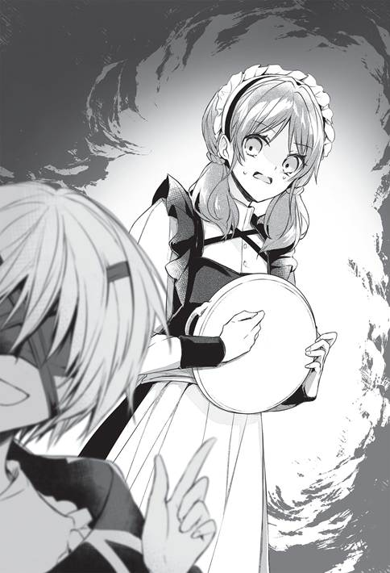
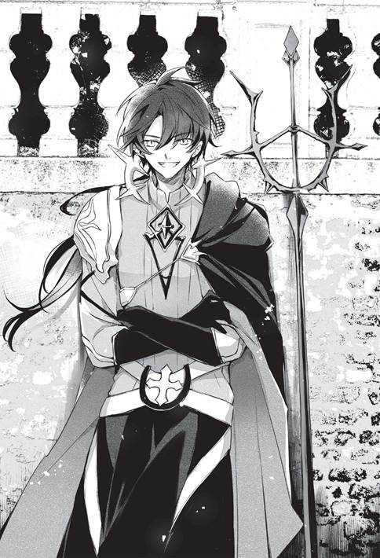

“สวัสดีครับ คุณไมรา วันนี้ก็งดงามเหมือนแสงส่องผ่านท้องฟ้ามืดครึ้มทีเดียว”
สุภาพบุรุษตัวน้อยกล่าวทักทาย แล้วส่งอาหารกับขนมที่ซื้อมาเป็นของฝากให้
“ยินดีต้อนรับค่ะ ท่านคุนอน ขอบคุณที่เอื้อเฟื้อเสมอ”
หญิงรับใช้ชราต้อนรับสุภาพบุรุษอย่างยิ้มแย้ม
“คุณหนู ท่านคุนอน...อุ๊ย”
เซลาลาฟีราไม่ตอบสนอง
ปรากฏว่าเธอฟุบหลับคาโต๊ะในห้องนั่งเล่น
“ไม่เป็นไร เดี๋ยวไปปลุกเอง”
คุนอนขอให้ไมราไปชงชาแล้วเดินเข้าไปที่โต๊ะ
—วันที่ห้า
วันนี้คุนอนแวะเวียนมาอพาร์ตเมนต์ของเซลาลาฟีราเป็นวันที่ห้าแล้ว
“หืม...”
เซลาลาฟีราผล็อยหลับไป
เอกสาร เศษกระดาษ และหนังสือกระจัดกระจายบนโต๊ะเว้นตรงที่เธออยู่
คุนอนหยิบเอกสารเขียนหวัดๆ แผ่นหนึ่งขึ้นมาแล้วนึกชื่นชม ถึงจะมองไม่เห็นก็เถอะ
“ไม่กี่วันทำได้ขนาดนี้เชียว”
เขาคิดว่าเธอเรียนรู้ได้เร็วมาก
ซึ่งเจ้าตัวก็บอกเองว่าเป็นอย่างนั้น ไม่ว่าจะเวทมนตร์หรืออะไรก็ตาม
นั่นคือความจริง
เซลาลาฟีราเข้าใจในพื้นฐานโครงสร้างอุปกรณ์เวทแล้วในช่วงหลายวันมานี้
“...อืม อย่างนี้นี่เอง”
คุนอนอ่านเอกสารไปเรื่อยๆ
“อืม...”
เมื่อมีความเคลื่อนไหวใกล้ๆ
เซลาลาฟีราคงรู้สึกผิดสังเกตจนตื่นขึ้นมา
“อ๊ะ รุ่นพี่คุนอน...”
“นอนต่อก็ได้นะ นี่บ้านคุณหนูอยู่แล้ว”
คุนอนกำลังหมกมุ่น
ตอนนี้เขาสนใจในสิ่งที่เซลาลาฟีราเขียนมากกว่าเจ้าตัวเสียอีก
ตลอดสี่วันก่อนจะถึงวันที่ห้า
คุนอนมาบ้านเซลาลาฟีราทุกวัน
เพื่อสอนเธอเรื่องพื้นฐานโครงสร้างอุปกรณ์เวท
การเลือกบ้านของเซลาลาฟีราเป็นที่เรียนมาจากความต้องการอย่างหนักแน่นของเธอเอง
—เซลาลาฟีราเข้าใจในทันที
การคิดค้นครั้งนี้จะทำเงินได้มากมายก่ายกอง จึงไม่อาจปล่อยให้มีช่องโหว่ได้เป็นอันขาด
ดังนั้นเธอเลยเลือกที่นี่
คุนอนไม่เกี่ยงเรื่องสถานที่ จึงไม่ขัดข้องอะไร
ทั้งคู่ช่วยกันวางแนวคิดเรื่องอุปกรณ์เวทที่สร้างบ้านได้เมื่อส่งพลังเวทให้ ควบคู่ไปกับการศึกษาเรื่องอุปกรณ์เวทของเซลาลาฟีราด้วย
ดำเนินการไปพร้อมกัน
เพราะเซลาลาฟีราไม่ยอมให้ล่าช้าในขั้นตอนนี้
เหตุผลคือศักดิ์ศรี
เพราะได้เปรียบจากการแบ่งผลประโยชน์กันคนละครึ่งอยู่แล้ว เธอจะไม่ยอมทำให้คุนอนเสียเวลาอย่างหน้าด้านๆ อีก
เซลาลาฟีราหั่นเวลานอนและเวลาไปโรงเรียนมาตั้งหน้าตั้งตาศึกษาเรื่องอุปกรณ์เวท
จนได้ผลลัพธ์ในวันที่ห้า
“เขียนแบบแปลนเป็นแล้วสินะ”
“ค่ะ...มีตรงไหนดูแปลกๆ ไหมคะ”
“ไม่มีตรงไหนแปลกหรอก มันเชื่อมต่อกันทั้งหมด แต่ยังละตรงนี้กับตรงนี้ได้...เอาเถอะ ยังไม่ต้องไปสนใจตรงนั้น แค่นี้ก็โอเคแล้ว”
—บรรจุสูตรอาคมมากมายลงไปในขอบเขตที่กำหนดไว้
พูดให้เข้าใจง่ายๆ เหมือนยัดของกินใส่กล่องข้าว
นี่คือพื้นฐานการสร้างอุปกรณ์เวท
ซึ่งคราวนี้ใช้ขอบเขตได้อย่างกว้างขวาง
ตอนนี้ยังทำแบบนั้นได้
ภายภาคหน้าคงมีแนวคิดปรับปรุงมากมาย แต่ตอนนี้เอาแค่นี้ก็พอ
“เริ่มกันเลยนะ”
ถ้าเข้าใจถึงขนาดนี้แล้ว เซลาลาฟีราก็น่าจะใช้การได้
“จะเริ่มแล้วสินะ...”
เซลาลาฟีรากลืนน้ำลายเอื๊อก
—ในช่วงสี่วันที่ผ่านมา
เป็นช่วงที่เซลาลาฟีราใช้ความพยายามอย่างยิ่งยวดที่สุดในช่วงสิบสองปีของเธอ เธอพยายามเรียนรู้อย่างจริงจังจนสามารถทำทุกอย่างได้อย่างรวดเร็ว
เมื่อถึงเวลาทดสอบความสามารถ เธอก็รู้สึกประหม่าขึ้นมา
บอกตามตรงว่าตอนนี้ประหม่ายิ่งกว่าตอนสอบเข้าโรงเรียนเวทมนตร์เสียอีก
ถ้าทำให้คนที่ช่วยสอนเธอมาตลอดอย่างคุนอนผิดหวัง เธอคงจะห่อเหี่ยวมาก
“ที่จริงก็น่าจะทำสำเร็จไปแล้วไม่ใช่เหรอ”
“เอ๊ะ?”
“ถ้าเขียนสูตรอาคมได้ขนาดนี้ คงได้ลองดูแล้วใช่ไหม ถ้าฉันเป็นคุณหนูฉันก็คงจะทดลองเองหลายหนแล้ว เพื่อตรวจสอบว่าเขียนสูตรอาคมได้ถูกต้องหรือไม่ เพราะทดลองดูเดี๋ยวนั้นจะเป็นการตรวจสอบที่ง่ายที่สุดเลยนี่นา”
จริงอย่างที่เขาพูด
เธอทดลองมาเยอะแล้วตามที่คุนอนพูด
“แต่ยังไม่ได้ลองกับขนาดตามที่คาดคะเนไว้...”
“ไม่มีปัญหาหรอก แค่สร้างต้นแบบได้ก็ประยุกต์ใช้ได้สบาย”
คุนอนยื่นมือออกไป
“ใช้สูตรอาคมที่มั่นใจที่สุดในตอนนี้ มาเริ่มกันเลย แสดงทุกอย่างออกมาให้เห็นที”
อุปกรณ์เวทที่คิดค้นมา ตอนนี้ยังเป็นเพียงสูตรอาคมที่เขียนบนแผ่นกระดาษ
ในภายภาคหน้าน่าจะเขียนลงบนสิ่งที่ไม่ใช่กระดาษ เมื่อคำนึงถึงความทนทานและการใช้งาน ผืนผ้า แผ่นไม้ แผ่นเหล็กคงอยู่ในตัวเลือก
แต่สำหรับการทดลองใช้แค่กระดาษก็พอ
สูตรอาคมสำหรับอุปกรณ์เวท
พูดอย่างง่ายๆ คือเครื่องแสดงลำดับการถ่ายเทพลังเวท
เมื่อใส่กลไกหลายอย่างลงในไอเดียที่ออกแบบไว้ องค์ประกอบทางเวทมนตร์จะทำงานร่วมกันและแสดงผลซับซ้อน
ตัวอย่างเช่นกลไกซับซ้อนแบบ ‘ลิ้นผ่าน’ ที่ทำให้เกิดผลจำเพาะเมื่อมีพลังเวท และ ‘ลิ้นผันแปรสองขั้น’ ที่ทำให้แยกออกเป็นสองทาง อีกทั้งยังมีการเปลี่ยนธาตุด้วย
แต่อุปกรณ์เวทคราวนี้เรียบง่ายเป็นอย่างยิ่ง
ฉะนั้นเซลาลาฟีราถึงเขียนสูตรอาคมได้ด้วยความรู้พื้นฐาน
“เป็นสี่เหลี่ยมอย่างที่คิด”
“เป็นแบบที่ง่ายที่สุดสำหรับดิฉันในตอนนี้ค่ะ...แต่สักวันฉันจะเขียนสูตรอาคมที่ซับซ้อนกว่านี้ให้ได้ค่ะ”
อันดับแรกเก็บของบนโต๊ะให้เรียบร้อย
เซลาลาฟีรากับคุนอนนั่งประจันหน้ากันโดยวางกระดาษแผ่นหนึ่งไว้ตรงกลาง
เป็นกระดาษที่เขียนสูตรอาคมไว้
สูตรอาคมบนกระดาษเป็นรูปสี่เหลี่ยมเสียส่วนใหญ่ สมเป็นเซลาลาฟีราจริงๆ
“เริ่มเลยนะคะ”
เซลาลาฟีราส่งพลังเวทไปยังกระดาษ
ทันใดนั้น—กำแพงดินก็ก่อตัวขึ้นในสูตรอาคม
ไมราที่ปักผ้าอยู่ตรงมุมห้องอุทานอย่างตกใจ
เธอคงเพิ่งเคยเห็นปรากฏการณ์เช่นนี้เป็นครั้งแรก
“...ฮู่”
เพียงพริบตาเดียว
บ้านทำจากดินหลังเล็กก็ก่อตัวขึ้นบนกระดาษเขียนสูตรอาคม
“อืม ใช้ได้”
ครั้งแรกได้แค่นี้ก็พอแล้ว
เป็นบ้านเดี่ยวที่เรียบง่าย คนทั่วไปคงเห็นเป็นแค่แท่งสี่เหลี่ยมที่ทำจากดิน
มีหน้าต่าง แต่ไม่มีกระจก มีวงกบ แต่ไม่มีประตู
ลักษณะภายในก็เรียบๆ
มีแต่เครื่องเรือนลักษณะเหมือนของแต่งบ้านสี่เหลี่ยมที่ไม่รู้ว่าอะไรเป็นอะไร
แต่แบบนี้ดีแล้ว
เดี๋ยวจะอาศัยสิ่งนี้เป็นต้นแบบ ทำการดัดแปลงอะไรหลายอย่างเพิ่มเติมเข้าไป
เช่น เปลี่ยนสี ปรับเครื่องเรือนและของตกแต่งให้ประณีตขึ้น ดินและหินมีหลายประเภท เอามาทำอะไรได้หลากหลายกว่านี้แน่
เรื่องรายละเอียดจะเพิ่มเติมลงไปเท่าไรก็ได้
—เหลือแค่สร้างให้มีขนาดใหญ่พอที่จะให้คนเข้าไปอยู่ได้เท่านั้น
นี่เป็นเพียงสิ่งที่ทดลองสร้างขึ้น
เหมือนการซักซ้อมก่อนถึงของจริง
“ขอทดลองดูบ้างดีกว่า ช่วยคลายออกก่อนได้ไหม”
“ได้ค่ะ”
เซลาลาฟีราคุมกระดาษให้คลายอุปกรณ์เวท
แล้วบ้านดินก็หายวับไปจนหมดสิ้น
ใช่แล้ว นี่คืออุปกรณ์เวท
เมื่อใส่พลังเวทเข้าไป เวทมนตร์จำเพาะจะทำงานแบบจำเพาะ
อุปกรณ์เวทเป็นเช่นนั้น
สูตรอาคมนี้บรรจุเวทมนตร์พสุธาขั้นพื้นฐานอย่างเวท ‘เคลื่อนทราย’ กับเวท ‘ก่อทราย’ เอาไว้
เมื่อสองอย่างนั้นทำงานจะเสกดินตามรูปทรงที่กำหนด
ดินซึ่งมีลักษณะเป็นบ้าน
กลไกเรียบง่ายแค่นั้น
เซลาลาฟีราที่ยังอ่อนหัดไม่ว่าจะในฐานะจอมเวทพสุธาหรือจอมเวททั่วไป ยังสามารถทำเรื่องเช่นนี้ได้อย่างไม่ยากเย็น
“โอ๊ะ ทำได้แล้ว ไม่เลวเลย! แบบนี้น่าจะขายอันเล็กๆ เป็นของเล่นได้!”
คุนอนลองทำดูบ้าง เขาสร้างบ้านดินแบบเดียวกันได้
“...”
คุนอนเปลี่ยนมุมมองของบ้านดิน พินิจอย่างละเอียดลออทั้งที่น่าจะมองไม่เห็น
—เซลาลาฟีรามองคุนอนพลางครุ่นคิด
ลำพังเวทมนตร์ขั้นต้นทำได้ขนาดนี้เชียวหรือ
เธอคิดว่าคุนอนมีหลายอย่างไม่ธรรมดา แต่สิ่งที่น่าตกตะลึงมากที่สุดคือความคิดสร้างสรรค์
“เป็นไงบ้างคุณไมรา อยากอาศัยอยู่ในบ้านแบบนี้ไหม ถ้าฉันได้อยู่กับคุณ ไม่ว่าบ้านแบบไหนก็ต้องเพลิดเพลินเป็นแน่”
“แต่การอยู่กันสองคนในห้องนั้นน่าจะแคบไปนะคะ ท่านคุนอน”
“นั่นสินะ ฉันก็คิดอย่างนั้น”
คนหนึ่งหัวเราะฮะๆ คนหนึ่งหัวเราะโฮะๆ
เซลาลาฟีรามีความสนใจในตัวคุนอนหลายอย่าง แต่เรื่องนี้เธอขำไม่ออก
เธอเริ่มเข้าใจเหตุผลที่ลูกพี่ลูกน้องถูกใจเขา
คุนอน กริออน
ไม่ใช่คนสนุกสนานธรรมดา และไม่ใช่คนที่มีนิสัยแปลกๆ ธรรมดา
เขาเป็นคนประหลาดที่ใช้เป็นแค่เวทมนตร์ขั้นต้นสี่อย่าง ในทางกลับกันคือใช้แค่เวทขั้นต้นสี่อย่างเขาก็สามารถอยู่ในชั้นเรียนระดับพิเศษได้แล้ว ยิ่งไปกว่านั้นตอนเพิ่งเข้าเรียนยังใช้เป็นแค่สองอย่างเท่านั้น
และ—ในชั้นเรียนระดับพิเศษ ยังมีคนที่มีพรสวรรค์หลากหลายพอๆ กับคุนอนอยู่อีกเพียบ
เซลาลาฟีรารู้สึกว่าตัวเองพลาดไป
เธอน่าจะทุ่มเทให้เวทมนตร์อย่างจริงจังเร็วกว่านี้
เพราะความคิดที่ตื้นเขินเธอเลยทำได้แค่การเล่นกับดินเฉยๆ
“คุณหนูเซลาลาฟีรา ว่าไงล่ะ อยากอาศัยอยู่ในบ้านแบบนี้ไหม ถ้าฉันได้อยู่ด้วย ไม่ว่าที่ไหนก็น่าจะเพลิดเพลิน”
“ถ้าได้อาศัยอยู่กับสุภาพบุรุษแสนวิเศษแบบนี้ ดิฉันก็รู้สึกเหมือนกันค่ะ แต่ห้องขนาดนี้ แค่จะอาศัยอยู่คนเดียวยังคับแคบไปด้วยซ้ำ”
หลังจากนั้นทั้งสามก็คุยกันเรื่องบ้านในอุดมคติครู่หนึ่ง
แล้วจึงร่ำลากันในวันนี้
พรุ่งนี้มีแผนจะสร้างบ้านหลังใหญ่แล้ว
“ท่าทางจะเป็นงานใหญ่นะคะ...”
“ไม่ถึงกับเป็นงานใหญ่หรอก แค่ขนาดใหญ่เท่านั้นแหละ กลไกง่ายนิดเดียวเอง”
อุปกรณ์เวทที่สร้างบ้านได้ด้วยการส่งพลังเวทให้
เพราะชื่อเรียกยาวเกินไป เลยตั้งชื่อใหม่ว่า ‘อุปกรณ์เวทก่อสร้าง’ หลังจากที่มันเสร็จสมบูรณ์ในวันรุ่งขึ้น
คุนอนกับเซลาลาฟีราอยู่ในห้องเรียนว่างของโรงเรียนเวทมนตร์ที่ยืมมาใช้
“จากนี้ไปจะใช้อุปกรณ์อย่างเป็นเรื่องเป็นราวแล้วนะ”
ตลอดช่วงเช้าวิ่งวุ่นจัดหาพวกเครื่องมือ ก่อนเริ่มทำการทดลองในช่วงบ่าย
สิ่งแรกที่เตรียมมาคือแผ่นไม้รูปสี่เหลี่ยมจัตุรัสบางๆ เก้าแผ่น
นำมาใช้เป็นรากฐานแทนกระดาษ
ถัดไปเป็นปากกากับหมึกสำหรับเขียนสูตรอาคม
ตอนเขียนลงบนกระดาษใช้หมึกผสมองค์ประกอบทางเวทมนตร์ก็เพียงพอ แต่เมื่อทำอย่างจริงจังจำเป็นต้องใช้ไอเท็มเฉพาะทาง
เขียนสูตรอาคมลงบนแผ่นไม้ด้วยหมึกเฉพาะทาง พร้อมกับบรรจุเวทมนตร์พสุธาของเซลาลาฟีราลงไป
โดยพื้นฐานจะทำแค่นี้
สุดท้ายทั้งเก้าแผ่นจะถูกเชื่อมต่อเป็นแผ่นเดียว
ถ้าใหญ่เกินไปจะใช้งานยาก เวลาดัดแปลงจะแบ่งเป็นเก้าแผ่น
“อาจจะลำบากหน่อย ขออภัยที่ช่วยไม่ได้ แต่จะช่วยซัพพอร์ตให้”
การเขียนสิ่งนี้จำเป็นต้องใช้พลังเวทธาตุดิน
คุนอนก็เขียนสูตรอาคมนี้ได้
แต่เนื่องจากใช้วัสดุเวทกับตัวเร่งปฏิกิริยาแบบพิเศษ จึงต้องใช้เงินเยอะไม่ใช่เล่น
“ไม่ต้องใส่ใจค่ะ นี่เป็นเรื่องที่ดิฉันควรทำอยู่แล้ว”
—เซลาลาฟีราตั้งใจอย่างแน่วแน่
น่าจะลำบากนิดหน่อยจริงๆ
ต้องเขียนลงบนแผ่นใหญ่ขนาดนี้เชียว
ที่ผ่านมาทำบนโต๊ะได้ แต่คราวนี้ใหญ่ขึ้นตั้งเยอะ
เธอคิดอย่างนั้น แต่ไม่ยอมถอย
บัดนี้ได้เวลาที่สัตว์ร้ายหิวกระหายในใจจะคำรามแล้ว อย่าได้หวั่นไหว
“เริ่มจากการสร้างบ้านในแบบที่ทดลองเมื่อวานให้มีขนาดใหญ่ได้ก็พอ เอาให้เหมือนกันนั่นแหละ”
ทุกอย่างมีลำดับขั้นตอน
คุนอนคิดว่าควรเริ่มจากบ้านง่ายๆ ก่อน
เมื่อวานสร้างบ้านเดี่ยวหลังเล็กซึ่งมีแต่ห้องสี่เหลี่ยม
คราวนี้ต้องสร้างให้ใหญ่พอที่คนจะเข้าไปอยู่ได้
ตั้งเป้าหมายแรกไว้เท่านั้นก่อน
“เข้าใจแล้วค่ะ ตามการคำนวณแล้ว—”
“อืม นั่นสินะ คงใช้ความแข็งแรงแบบที่ใช้ในสูตรอาคมเล็กๆ ไม่ได้หรอก—”
ปรับความแข็งแรงของรากฐานใหม่
ปรับความหนาของผนังและเพดานใหม่
ตอนทำบ้านหลังเล็กอาจไม่มีปัญหา แต่ถ้าขนาดใหญ่ขึ้นย่อมเป็นอีกเรื่อง
น้ำหนักบ้านย่อมมากขึ้นแน่นอน
จำเป็นต้องมีโครงสร้างที่รองรับน้ำหนักได้
ด้วยเหตุนี้จึงต้องคำนวณใหม่
เซลาลาฟีรากับคุนอนหารือเรื่องนั้นเล็กน้อยก่อนจะเริ่มงาน
แผ่นไม้ถูกวางลงบนพื้นแล้วเขียนสูตรอาคมไปทีละแผ่น
โครงสร้างของอุปกรณ์เวทก่อสร้างเป็นแบบง่ายๆ
สูตรอาคมก็ง่ายๆ ไม่ซับซ้อนนัก
“—อยากสร้างบ้านสองชั้น ขอห้องใต้หลังคาด้วยนะคะ ห้องใต้หลังคาเป็นสิ่งที่เด็กผู้หญิงทั่วโลกชื่นชอบ”
“—หืม ในฐานะสุภาพบุรุษต้องจำเรื่องนั้นเอาไว้แล้วละ”
เรื่อง ‘บ้านในอุดมคติ’ เมื่อวานคงสนุกสนาน วันนี้เซลาลาฟีราเลยพูดเรื่องบ้านตลอดเวลา
แต่ไม่ใช่เรื่องเปล่าประโยชน์
ทั้งหมดเป็นแนวความคิดที่มาในรูปแบบของการพูดไปเรื่อยเปื่อย
สักวันจะใช้อุปกรณ์เวทก่อสร้างสร้างบ้านในอุดมคติให้ได้
แม้วันนี้ยังสร้างได้แต่บ้านแบบง่ายๆ ก็เถอะ...
ถึงจะสร้างตอนนี้ไม่ได้ แต่การคิดเผื่อไว้ก็ไม่ได้สูญเปล่า
ทั้งสองพูดคุยพลางทำงานอย่างต่อเนื่อง
สูตรอาคมถูกเขียนเสร็จอย่างรวดเร็ว จึงทดลองดูในทันที
“เหม็นดินจัง”
“นั่นสินะคะ”
ทั้งคู่ขนแผ่นไม้ออกจากอาคารเรียนไปวางเรียงกันในพื้นที่ว่างเพื่อเตรียมใช้งาน
สามารถสร้างบ้านดินได้ตามแนวความคิด
สำเร็จในครั้งเดียวโดยไม่มีข้อผิดพลาด
แต่เมื่อเข้าไปในบ้านด้วยความยินดีปรีดา
“ดันมองข้ามเรื่องกลิ่นเหม็นไปจนได้”
ทั้งสองคนก็เข้าแล้วรีบออกมาทันที
เพราะฉุนกลิ่นดิน
กลิ่นดินจากทั่วทั้งบ้าน
เป็นธรรมดาอยู่แล้ว
เพราะเป็นบ้านที่สร้างจากดิน
“เวลาใช้เวทมนตร์พสุธาจะได้กลิ่นจางๆ แต่พอเข้าไปข้างในแล้วกลิ่นแรงทีเดียว”
—นี่แหละเหตุผล
ถ้าไม่ลองทำดูจะไม่รู้ปัญหา
ถึงได้ทำการทดลองเพื่อให้เห็นปัญหา
“มีวิธีดับกลิ่นหรือสูตรอาคมสำหรับเปลี่ยนให้เป็นกลิ่นอื่นไหม”
“มีค่ะ”
“งั้นช่วยแก้ไขให้ที ส่วนเรื่องรากฐานต้องปรับหน่อย”
“นั่นสินะ พื้นตรงนี้ดูเรียบดี แต่บ้านออกจะเอียงอยู่นิดๆ”
“ทำให้พื้นบ้านกับพื้นดินแยกจากกันอาจจะดีกว่านะ”
“ให้เพิ่มเสาสินะคะ”
“ใช่ แบบใต้ถุนสูงไง ถ้าใส่กลไกปรับพื้นบ้านให้อยู่ในแนวนอนโดยอัตโนมัติ ไม่ว่าพื้นดินจะเป็นยังไงก็แก้ปัญหาได้ ปรับให้อยู่ในแนวนอนโดยอาศัยความสูงของเสา
“เรื่องนี้ออกจะยุ่งยากนิดหน่อย เดี๋ยวจัดการให้เอง”
“รบกวนหน่อยนะคะ”
กว่าจะแก้รายละเอียดปลีกย่อยจนกระทั่งเสร็จสมบูรณ์ได้ก็เป็นเวลาเย็น
“อืม พอจะอยู่ไหวนะ”
ทั้งพื้น ผนัง และเพดานแข็งเหมือนหิน
อันที่จริงแค่ทำให้ดินแข็งตัวเป็นบ้านเท่านั้น
มีเครื่องเรือนอย่างเตียงและโต๊ะด้วย แต่ก็ทำจากดินแข็งๆ ด้วยเช่นกัน
โดยเฉพาะเตียงนั้นแข็งเป๊ก แบบนี้หลับไม่ลงแน่
แต่น่าจะอาศัยอยู่ได้
ไม่มีกลิ่นดิน ดูมั่นคงอย่างยิ่ง
ปรับแก้ลักษณะภายนอกไปเล็กน้อยแล้วด้วย
ค้ำด้วยเสาหกต้น ใส่กลไกปรับความสูงของเสาโดยอัตโนมัติให้รับน้ำหนักบ้านอย่างสมดุล
ทีนี้ก็แก้ปัญหาเรื่องบ้านเอียงได้แล้ว ต่อให้อยู่ในพื้นที่สูงๆ ต่ำๆ ก็น่าจะตั้งได้อย่างสมดุล
“เหลือแต่หน้าต่างกับประตูสินะ”
ตรงนั้นยังว่างเปล่าเหมือนเมื่อวาน
มีกรอบหน้าต่าง แต่ไม่ได้ติดกระจกไว้ ทั้งยังปราศจากประตู จึงมองเห็นจากข้างนอกได้ทั้งหมด
ถือเป็นบ้านที่ไม่สมบูรณ์
แบบนี้ก็เหมือนกล่องให้คนเข้าไปอยู่เท่านั้น
“ไม่มีปัญหาค่ะ รุ่นพี่คุนอน เดี๋ยวฉันจะเขียนสูตรอาคมสำหรับหน้าต่างกับประตูเดี๋ยวนี้เลย”
“อ๊ะ ทำได้เลยเหรอ”
“ค่ะ ต้องเพิ่มสูตรอาคมแบบอื่น คราวนี้เลยจงใจไม่ใส่ไว้”
เวทมนตร์ที่ใช้มีแต่เวท ‘เคลื่อนทราย’ กับเวท ‘ก่อทราย’
เซลาลาฟีรายึดติดเรื่องนั้น
“งั้นเหรอ ถ้าเพิ่มเข้าไปก็เป็นอันเสร็จสมบูรณ์ละนะ”
เสร็จสมบูรณ์
“จริงเหรอ ดิฉันทำสำเร็จแล้วเหรอ”
“อื้อ คิดว่าผลงานน่าจะดีพอแล้วละ”
คุนอนพยักหน้าอย่างหนักแน่น
เซลาลาฟีราทำการทดลองครั้งแรกจนลุล่วง
เสร็จสมบูรณ์
เสร็จสมบูรณ์แล้ว
—นึกว่าความดีใจจะเอ่อล้นขึ้นมา แต่ไม่เป็นเช่นนั้น
กว่าจะมาถึงจุดนี้ได้ลำบากแทบแย่
เธอรู้ซึ้งว่าตนด้อยความสามารถจากการเดินทางไกล ต้องย้ายบ้านและยากลำบากเพราะทรัพย์จางทุกวัน แถมยังต้องยัดความรู้เรื่องอุปกรณ์เวทที่ไม่คุ้นหูใส่สมอง
เธอตั้งหน้าตั้งตาเล่าเรียนจนอยากถามตัวเองว่าตลอดชีวิตเคยพยายามมากเท่านี้หรือเปล่า ใช้ความพยายามโดยยอมลดเวลานอนด้วย
ในที่สุดก็บรรลุเป้าหมายจนได้
แต่ไม่รู้เหตุใด
เธอดีใจก็จริง แต่ไม่อาจยินดีให้เต็มที่ได้ ในใจรู้สึกบอกไม่ถูก
“เป็นอะไรไป ไม่ดีใจเหรอ”
คุนอนถามอย่างเป็นห่วง
เพราะเซลาลาฟีราทำหน้าพิพักพิพ่วน
“ก็ใช่ว่าจะไม่ดีใจหรอกนะคะ...”
เซลาลาฟีราลังเลเล็กน้อย ก่อนตัดสินใจพูดจากใจจริง
คุนอนเป็นจอมเวทที่นำหน้าตนอยู่
ถ้าอย่างนั้นก็อาจเข้าใจความรู้สึกของเธอในตอนนี้
“ฉันนึกถึงแต่วิธีปรับปรุงมากกว่ารู้สึกดีใจค่ะ เรื่องที่อยากทดลองมากมายผุดขึ้นมาในหัว
“พอคิดว่าเรื่องนี้ประสบความสำเร็จแล้ว ดิฉันก็คิดถึงเรื่องต่อไปเลย...”
เรื่องต่อไป
เซลาลาฟีราเริ่มคิดแล้ว
ต่อไปจะสร้างบ้านแบบไหน จะทดลองสูตรอาคมแบบไหน
ไม่อาจร่วมยินดีไปกับคุนอนที่พยายามด้วยกันมาได้
ถึงกับรู้สึกผิดต่อเรื่องนั้นด้วย
“ฉันเข้าใจ! ฉันก็เหมือนกัน!”
แต่เธอกังวลโดยใช่เหตุ
“อันที่จริงฉันอยากใช้เทคนิคนี้ในการทำอย่างอื่น! ตอนนี้เอาแต่คิดเรื่องนั้นอยู่! ขอโทษนะที่ไม่ได้คิดถึงการอาศัยอยู่บ้านหลังนี้กับคุณหนูเซลาลาฟีราเลย!”
เหมือนกันเลย
ไม่ใช่แค่เหมือนสิ
คุนอนคิดล้ำหน้าเซลาลาฟีราไปอีก
จิตใจไม่ได้อยู่ตรงนี้แล้ว
“—สมกับเป็นรุ่นพี่คุนอนค่ะ นำหน้าดิฉันเสมอเลย”
เหล่ารุ่นพี่ของ ‘กลุ่มปรองดอง’ น่าทึ่งมาก
แต่คนผู้นี้น่าทึ่งไม่ด้อยไปกว่ากัน
ชั้นเรียนระดับพิเศษมีคนแบบนี้เกลื่อนกลาดเชียวหรือ
พอคิดแบบนั้น เซลาลาฟีราก็ชักรู้สึกตื่นเต้นขึ้นมา
เซลาลาฟีรา ควอตซ์
เข้าโรงเรียนเวทมนตร์มาได้ประมาณเดือนครึ่ง
ในที่สุดก็เลิกใช้ชีวิตเพื่อเวทมนตร์
เปลี่ยนจากการใช้ชีวิตเพื่อเวทมนตร์มาเป็นการทุ่มเททั้งชีวิตให้เวทมนตร์
เวทมนตร์น่าสนุกมาก
ความเป็นไปได้ของเวทมนตร์นั้นน่าสนใจ
อยากทดลองทุกอย่างที่นึกออกเหลือเกิน
เดี๋ยวนี้เลยยิ่งดี
“—เอาละ เราไปหาเงินกันก่อนนะ”
เมื่อได้ยินคำพูดนั้นของคุนอน
เซลาลาฟีราซึ่งจมลงในห้วงความคิดเกี่ยวกับ ‘เรื่องต่อไป’ ก็หวนกลับสู่ความเป็นจริง
เซลาลาฟีราเพิ่งนึกขึ้นได้
อุปกรณ์เวทก่อสร้างเสร็จสมบูรณ์แล้ว
จริงอยู่ว่ายังอยู่ในขั้นพื้นฐาน แต่นี่เป็นเรื่องสำคัญที่สุด
นับจากนี้สิ่งก่อสร้างจะก้าวหน้าขึ้น
เหล่าจอมเวทพสุธาที่ชื่นชมเทคนิคนี้ต้องให้กำเนิดสูตรอาคมสำหรับก่อสร้างใหม่ๆ อย่างไม่หยุดหย่อนเป็นแน่
อนาคตช่างน่าตื่นเต้นยิ่งนัก เซลาลาฟีราตั้งใจจะเกาะติดเพื่อไม่ให้ตัวเองล้าหลัง
แต่นั่นเป็นเรื่องในวันข้างหน้า
“ดิฉันคิดว่าสิ่งนี้ต้องทำเงินได้แน่”
เซลาลาฟีราพูดพลางมองดูบ้านดินที่เสร็จสมบูรณ์แล้ว
“แต่ไม่ได้คิดเอาไว้เลยว่าทำยังไงถึงจะหาเงินได้”
การศึกษาเรื่องอุปกรณ์เวท
และการทดลองสูตรอาคม
ช่วงนี้เซลาลาฟีราวุ่นอยู่แต่กับเรื่องพวกนั้น
บอกตามตรงว่าไม่มีเวลาให้คิดเรื่องอื่นใดจริงๆ เรื่องอื่นที่เอาใจใส่ ไม่ว่าจะทำอะไรก็ไม่ลืมคือช่วงเวลาลดราคาในตลาดเท่านั้น อย่างไรก็ลืมเรื่องนั้นไม่ลง ตกเย็นทีไรจะต้องไปทุกครั้ง คงเพราะเป็นเรื่องแรกที่ได้เผชิญในฐานะมนุษย์คนหนึ่ง ไม่ใช่ลูกสาวตระกูลควอตซ์ หรือไม่ก็เป็นสัญชาตญาณสัตว์หิวกระหายที่แสวงหาการล่า
แต่ช่างเถอะ
เธอคิดว่ามีหนทางหาเงินด้วยอุปกรณ์เวทก่อสร้างได้
แต่ยังไม่รู้ว่าจะทำอย่างไรดี
“ทำธุรกิจร่วมกันไง เรียกว่าทำสัญญาผูกขาดมั้ง”
“ทำธุรกิจร่วมกัน?”
“โดยส่วนตัวฉันอยากเลือกกิลด์พาณิชย์นะ แต่กิลด์อื่นก็...อืม เอาเป็นว่าเราจะทำสัญญาผูกขาดกับกิลด์ไหนสักแห่ง
“ส่วนรายได้จะมาจากค่าทำสัญญากับค่าบริการ”
เซลาลาฟีราพยักหน้าอย่างเข้าใจ
“ไม่ได้เอาสิ่งนี้ไปขายสินะ”
“เปล่าหรอก วิธีนั้นก็ใช้ได้เหมือนกัน”
“เอ๊ะ? แต่ว่า...”
คำตอบไม่คาดฝันของคุนอนทำให้เซลาลาฟีราขมวดคิ้ว
ถึงจะเป็นคนสร้างเอง แต่บอกตามตรงเธอไม่แน่ใจว่าอยากอาศัยอยู่บ้านหลังนี้หรือไม่
อันที่จริงก็ไม่อยากอยู่เท่าไร
เพราะเป็นแค่บ้านดินแข็งๆ เท่านั้น
เธอพอใจกับการอาศัยอยู่ในอพาร์ตเมนต์ตอนนี้ แต่ต้องไม่พอใจในการอยู่ที่นี่แน่ๆ
แล้วของพรรค์นั้นจะขายออกเหรอ
“พอเข้าใจเรื่องที่อยากจะสื่อนะ แต่สภาพแบบนี้คงยากหน่อย”
ค่อยยังชั่ว
คุนอนก็เข้าใจเรื่องนั้น
“นี่เป็นแค่ต้นแบบ ก็ดูไม่เหมือนใครดีนะ แต่ก็แค่นั้น
“บ้านย่อมเกี่ยวพันกับความต้องการของผู้อยู่อาศัย
“ถ้าเป็นแบบนี้คงไม่ค่อยมีค่าเท่าไร”
เซลาลาฟีราพยักหน้าอย่างเห็นด้วย
ไหนๆ จะซื้อแล้วก็อยากอาศัยอยู่ในบ้านตามรสนิยมของตน
ในเมื่อต้องจ่ายเงินแพงย่อมไม่อยากผ่อนปรน
ต่อให้ติดขัดเรื่องงบก็อยากให้เข้าใกล้อุดมคติมากที่สุด
“ดังนั้นฉันจึงคิดถึงแนวทางที่รับสร้างตามสั่ง ออกแบบบ้านตามรสนิยมของลูกค้าแล้วไปส่งมอบให้
“แบบนั้นต้องขายได้แน่”
—เซลาลาฟีราคิดว่าใช่เลย
น่าแปลกใจด้วยซ้ำที่ตนคิดไม่ถึง
นั่นเป็นวิธีขายเพียงอย่างเดียว
วิธีขายที่ใช่เลย
“อีกอย่าง เธอคงไม่ลืมลักษณะพิเศษของอุปกรณ์เวทชิ้นนี้นะ”
ไม่ลืมหรอก
เธอเป็นคนสร้างเอง ย่อมต้องรู้อยู่แล้ว
“ข้อหนึ่ง บ้านที่สร้างจะอยู่ได้แค่สามวัน และในบางสภาพแวดล้อมจะสั้นกว่านั้น
“ข้อสอง อุปกรณ์เวทจะรับภาระในการทำงาน ดังนั้นจึงใช้ได้แค่วันละห้าถึงหกครั้ง
“ข้อสาม ถ้าพังเศษซากจะยังคงอยู่ แต่ถ้าไม่พังสามารถทำให้หายไปหมดได้
“...ใช่ไหมคะ”
ข้อหนึ่ง บ้านที่สร้างขึ้นอยู่ได้แค่สามวัน
อาจขยายหรือลดได้บ้าง แต่โดยพื้นฐานจะมีอายุขัยประมาณสามวัน หากเผชิญกับฝนตกหนัก ลมแรง หรือข้อยกเว้นอื่นๆ จะไม่เป็นเช่นนั้น
ข้อสอง ใช้ได้แค่วันละห้าถึงหกครั้ง
หากเปรียบเป็นการใช้งานเครื่องมืออย่างหนักก็น่าจะเข้าใจได้ไม่ยาก
ถ้าใช้แค่วันละครั้งสองครั้ง หากเก็บรักษาอย่างระมัดระวังจะใช้ได้เกือบตลอดไป
จริงอยู่ว่าตั้งใจจะสร้างให้เป็นแบบนั้น
แต่พอเวลาผ่านไปสักสิบปียี่สิบปี หมึกที่ใช้เขียนสูตรอาคมหรือแผ่นไม้ที่เป็นรากฐานอาจเปลี่ยนสีหรือเสื่อมสภาพ จึงเป็นเพียงคุณสมบัติตามสเป็กเท่านั้น
ข้อสาม ถ้าพังเศษซากจะยังคงอยู่
เดิมทีเป็นผลิตภัณฑ์จากเวทมนตร์พสุธา ถ้าพังจะกลับเป็นดิน หรือไม่ก็กลายสภาพเป็นเหมือนตอนก่อนใช้สูตรอาคม
—ฟังแล้วดูเหมือนจะเต็มไปด้วยข้อบกพร่อง
“ข้อดีที่สุดของอุปกรณ์เวทก่อสร้างคือความง่ายดายและพกพาสะดวก”
สำหรับจอมเวทพสุธาเก่งๆ สามารถเขียนสูตรอาคมอุปกรณ์เวทก่อสร้างได้ภายในไม่กี่วัน
ถือเป็นเรื่องที่ง่ายดายมากเลยทีเดียว
เพราะว่าง่ายดาย ราคาพื้นฐานจึงน่าจะอยู่ในระดับที่ชาวบ้านจ่ายไว คือถูกกว่าการซื้อบ้านปกติ
แถมยังพกพาได้
พอคิดว่าเป็นบ้านที่พกพาได้ก็สะดวกไม่เบาทีเดียว
“จริงด้วยค่ะ”
เมื่อคำนึงถึงข้อดีพวกนั้น เซลาลาฟีราก็เริ่มมองเห็นกลุ่มลูกค้า
“อย่างเช่นว่าเอาไปใช้ในการท่องเที่ยวป่าเขาของชนชั้นสูง
“การนอนค้างกลางแจ้งของพ่อค้าเร่
“ลดความหนักใจของคุณพ่อที่ติดตามลูกสาวชนชั้นสูงหนีออกจากบ้านด้วยความจำยอม
“มีโอกาสใช้งานได้มากมายแน่นอนค่ะ”
คุนอนคิดว่าเธอพูดถูกเผง
สรุปแล้วให้คิดว่าเป็นเต็นท์ในลักษณะของบ้านจะง่ายกว่า แถมยังตั้งและรื้อถอนง่ายกว่าเต็นท์จริงเสียอีก
แล้วจะขายไม่ออกได้อย่างไร
ชาวบ้านอาจไม่นิยม แต่เศรษฐีน่าจะซื้อ
ที่ติดขัดอีกเรื่องคือมีแต่จอมเวทที่ใช้ได้
เพราะนี่เป็นอุปกรณ์เวท
“...พอคิดถึงเรื่องนั้นก็คงต้องเลือกกิลด์พาณิชย์ละมั้ง”
คุนอนมีหน้ามีตาในกิลด์นักผจญภัยอยู่บ้าง
แต่ถ้าจะเอาสิ่งนี้ไปขายควรจะเป็นกิลด์พาณิชย์มากกว่า
ถึงแม้นักผจญภัยน่าจะนำไปใช้แทนเต็นท์ เพราะคงไม่มีใครยึดติดกับเต็นท์ก็เถอะ
“ถ้างั้น...วันนี้เย็นแล้ว พรุ่งนี้เราไปด้วยกันเถอะ เดี๋ยวฉันจะไปช่วยเจรจาด้วย”
“รุ่นพี่คุนอน จะตามไปช่วยดิฉันต่อเหรอคะ”
ที่ผ่านมาก็ช่วยตั้งเยอะมากแล้ว ยังตามไปช่วยเจรจาอีก
เซลาลาฟีรารู้สึกประทับใจเข้าไปใหญ่
เธอรู้สึกว่าแม้วงสังคมจะกว้างขวาง แต่หาสุภาพบุรุษเทียบเท่าคุนอนได้ยากเย็น
“อย่าใส่ใจเลย เพราะเรามีสิทธิ์กันคนละครึ่ง ยังไงฉันก็ต้องมีส่วนเกี่ยวข้องด้วย”
เป็นการพูดเลี่ยงเพื่อไม่ให้ฝ่ายหญิงคิดมาก
เซลาลาฟีรารู้สึกว่าคุนอนช่างเป็นสุภาพบุรุษชั้นเลิศโดยแท้
แต่ความจริงเป็นอีกเรื่อง
—‘ถ้าคุณหนูดันไปทำสัญญาไม่เข้าท่า เราจะพลอยเดือดร้อนไปด้วย น่าเป็นห่วงออก ก็มันเกี่ยวพันกับเงินก้อนโต ในขณะที่คุณหนูยังไม่ประสีประสา ถึงเรื่องนั้นจะน่ารักดีก็เถอะ’
นั่นคือความคิดของคุนอน
ที่สำคัญคุนอนต้องไปเจรจาเรื่องของตนอยู่แล้ว ถือว่าประจวบเหมาะ
“ท่านคุนอน เรื่องคราวนี้—”
ทันทีที่คุนอนมาถึงที่นัดหมายกับเซลาลาฟีรา
ไมรา คนรับใช้เตรียมจะกล่าวคำขอบคุณหรือไม่ก็คำขอโทษ
หรืออาจเป็นทั้งสองอย่าง
เอาเป็นว่าเธอมาทักทายอย่างรีบร้อน
ดูจากอาการเหงื่อแตกแล้ว เธอคงเข้าใจดีว่าเป็นเรื่องใหญ่โต
“ช่างเถอะ ไม่เป็นไร”
คุนอนขัดจังหวะเธออย่างนุ่มนวล
“นี่เป็นความร่วมมืออย่างเท่าเทียมกับคุณหนูเซลาลาฟีรา ไม่ใช่การเอาเปรียบฝ่ายเดียวหรอก”
—วันนี้จะไปกิลด์พาณิชย์เพื่อขายอุปกรณ์เวทก่อสร้าง
นัดเจอกันที่คอฟฟี่ช็อปใกล้กิลด์พาณิชย์และตอนนี้ก็มาเจอกันเรียบร้อยแล้ว
คุนอนกับเซลาลาฟีรายังเป็นเด็ก
ถ้ามีแต่เด็กจะโดนดูถูกเอาได้ ไมราซึ่งเป็นคนรับใช้ของเซลาลา-ฟีราจึงมาด้วย
อันที่จริงเธอเป็นอดีตชนชั้นสูงระดับสูงของจักรวรรดิ
รู้สึกว่าจะเป็นผู้หญิงที่ผ่านการอบรมมารยาท การศึกษาในระดับทั่วไป รวมไปถึงการศึกษาสำหรับชนชั้นสูงระดับสูงมาแล้ว
นั่นไม่ใช่เรื่องแปลก
เพราะเธอเป็นคนรับใช้ของตระกูลควอตซ์ซึ่งเป็นชนชั้นสูงระดับสูง และได้รับมอบหมายให้ดูแลเซลาลาฟีรา หากเป็นตาสีตาสาที่ไม่รู้เรื่องมารยาทย่อมไม่มีทางได้มาอยู่ใกล้ตัวคุณหนูของตระกูลควอตซ์ได้ แถมยังเป็นลูกสาวด้วย
รู้สึกว่าเธอจะช่วยทำการค้าที่บ้านเดิมมาก่อน แถมยังมีประสบการณ์ในการเจรจาเรื่องการค้ามาแล้ว
เพียงแต่บ้านเดิมล่มจมไปเสียก่อน
—เพราะมีอดีตเช่นนั้น
ไมราจึงเข้าใจดี
อาจเข้าใจลึกซึ้งยิ่งกว่าคุนอนและเซลาลาฟีราด้วยซ้ำ
เธอไม่รู้เรื่องเวทมนตร์
แต่พอรู้เรื่องการค้าอยู่บ้าง
เธอพิจารณาว่าเทคนิคที่เด็กทั้งสองกำลังจะนำไปขายเป็นสินค้าที่มีแต่ชนชั้นสูงระดับสูงใช้งานได้นั้น
แสดงให้รู้ว่ามีค่ามาก
จึงอดคิดไม่ได้ว่าต่อจากนี้จะคุยเรื่องแบบไหนที่กิลด์พาณิชย์ ตั้งใจจะขายของแบบไหน ขายอย่างไร
และของที่ว่ามีค่าขนาดไหน
ทำให้ไม่อาจทนรอที่บ้านตามลำพังได้
หากพลาดพลั้งเพียงนิดอาจถูกหลอกลวงและช่วงชิงเทคนิคจนต้องแบกรับหนี้สินเอาไว้เองก็เป็นได้
ทว่าความแก่ชราย่อมมีข้อจำกัด
เธออาจทำตัวเกะกะก็ได้
ถึงกระนั้นเธอก็มีหน้าที่ปกป้องเซลาลาฟีรา
ฉะนั้นไมราจึงยืนกรานว่าจะร่วมทางมาด้วย
“ขอสอบถามหน่อยค่ะ ท่านคุนอน ลองคำนวณดูหรือยังคะ ตัวเลขคร่าวๆ ที่คาดว่าจะขายได้น่ะค่ะ...”
เธอเอ่ยกับคุนอนโดยไม่ผ่านเซลาลาฟีรา
นี่เป็นการกระทำที่เกินตัวคนรับใช้
แต่ไมรายอมเสียมารยาทเพื่อจะลองสอบถามดู
“เอ๊ะ? เรื่องนั้นเหรอ...ในเมื่อเป็นสิทธิ์ที่จะใช้ก็สักห้าล้านมั้ง”
เป็นเงินก้อนโตทีเดียว
แต่ไมราคิดว่าเหมาะสมดีแล้ว
ถึงจะรู้สึกว่าตั้งราคาให้สูงกว่านี้อีกนิดได้ แต่แบบนี้แค่ดูเงียบๆ คงไม่เป็นไร—
“ทำสัญญารายปี แล้วก็—”
“รายปี!?”
ปกติไมราทำตัวละมุนละม่อมเสมอ แต่จังหวะนี้ถึงกับโพล่งเสียงดังออกมา
ถึงกระนั้นก็ยังดูสงบเสงี่ยม เลยไม่เตะตานัก—แต่เพราะไมราส่งเสียงดังผิดวิสัย เซลาลาฟีราจึงรู้สึกตกใจอยู่คนเดียว
“ควรจะเป็นรายเดือนหรือเปล่า!?”
“เอ๊ะ? แบบนั้นแพงไปนะ”
ซิ ซิลลา เป็นสินค้า จึงต้องตั้งราคาสูง
แต่ค่าใช้เทคนิคไม่ใช่การขายสินค้า
นี่เป็นสัญญาแลกเปลี่ยนสิทธิ์การใช้และสิทธิ์การซื้อ
ตามที่คุนอนคาดคะเนไว้
น่าจะเก็บค่าสิทธิ์การใช้พื้นฐานปีละห้าล้าน จากนั้นก็หาเงินจากการสั่งทำอุปกรณ์เวทก่อสร้าง
“ท่านคุนอน มอบหมายให้ฉันเป็นคนเจรจาได้ไหมคะ”
“เอ๊ะ?...อืม อา...อืม”
—คุนอนใช้ความคิด
ถ้าไมราเสนอตัวขนาดนี้ ตนคงประเมินเธออ่อนหัดเกินไปหน่อย
เขาเชื่อว่าผู้หญิงงดงามย่อมไม่โกหก
แต่นี่เป็นเรื่องที่เกี่ยวพันกับเงินก้อนโต
เลยไม่กล้ามอบหมายให้จัดการทุกอย่าง
“รุ่นพี่คุนอน ไมราทำได้แน่ค่ะ ปล่อยให้เธอจัดการแล้วเราคอยดูไปก่อนแบบสุภาพบุรุษเถอะ ดิฉันจะขอเฝ้าดูแบบสุภาพสตรีนะคะ”
คุนอนไม่รู้ความเป็นมาของไมรา
แต่เซลาลาฟีรารู้เรื่องนั้นถึงได้ช่วยพูดให้
“...เหรอ งั้นตามนั้นก็แล้วกัน”
ถ้าหญิงงามถึงสองคนกล้าขอ งั้นยอมให้ก็ได้
คุนอนคิดแบบนั้นและปล่อยให้ไมราจัดการไป
เด็กสองคนกับหญิงชรามาถึงกิลด์พาณิชย์
บรรดาพ่อค้าเจนจัดจับตาดูอย่างไม่กระโตกกระตาก
เท่าที่ดูเป็นจอมเวท และเป็นเด็กที่ถูกเลี้ยงดูมาเป็นอย่างดี
ที่นี่คือนครเวทมนตร์ดีราซิก
จอมเวทเด็กไม่ได้หายาก แม้แต่เด็กก็ดูถูกไม่ได้
ฉะนั้นทุกคนจึงคอยดูอย่างระวัง เพื่อลู่ทางในการหาเงิน
แน่นอนว่าไม่มีใครโง่พอจะเข้าไปยุ่งเกี่ยวอย่างวู่วาม เรื่องนี้ก็ไม่ต่างจากกิลด์นักผจญภัย
“ท่านเซลาลาฟีราสินะ”
“ค่ะ”
เธอขอนัดพบล่วงหน้าเอาไว้
เจ้าหน้าที่กิลด์ให้การต้อนรับอย่างรวดเร็วและสุภาพ ทั้งสามคนถูกนำทางไปยังห้องส่วนตัวด้านในทันที
“—โอ๊ะ ขออภัยที่ให้รอ ผมชื่อแซ็ก ริกสัน เป็นรองหัวหน้าที่ทำการกิลด์พาณิชย์ สาขาดีราซิก”
หลังจากรออยู่ครู่หนึ่งในห้องรับรองซึ่งเพียบพร้อมไปด้วยเครื่องเรือนหรูหราสำหรับแขกผู้มีเกียรติ
ชายวัยกลางคนร่างท้วมที่มีลักษณะแบบพ่อค้ามือดีเดินเข้ามา
ถึงจะอ้วนไปบ้าง แต่ก็ไว้ผมและหนวดเรียบร้อย ใส่เสื้อผ้าเรียบง่ายไร้รอยยับ ดูสะอาดสะอ้านพอสมควร
ท่าทางจะเป็นพ่อค้ามีฐานะ
น่าจะอยู่ในวัยสี่สิบกลางๆ
การได้เป็นถึงรองหัวหน้าที่ทำการด้วยอายุเพียงเท่านี้ถือว่าก้าวหน้าค่อนข้างเร็ว น่าจะเป็นผู้ชายที่เก่งกาจไม่เบา
“รองหัวหน้าเหรอคะ”
เซลาลาฟีราตกใจ
เพราะคนใหญ่คนโตยอมมาเจรจากับเด็ก
“ใช่ครับ พอดีเจ้าหน้าที่คนอื่นไม่ว่าง ผมเลยมาคุยด้วยตัวเอง”
—โกหกชัดๆ
แซ็กรู้ดี
เซลาลาฟีราเป็นคนในตระกูลดยุกควอตซ์แห่งจักรวรรดิเออร์เซียน
เพียงแค่นี้ก็มองข้ามไม่ได้แล้ว
ไม่ควรทำตัวเสียมารยาท และไม่คิดจะขูดรีดแม้แต่น้อย
อีกทั้งเด็กหนุ่มคาดที่ปิดตาที่อยู่ด้วยคือคุนอน ลูกศิษย์ของช่างเทคนิคเวทเซออนลีย์
เขามีชื่อเสียงเพราะเป็นลูกศิษย์เซออนลีย์คนนั้น และสร้างผลงานเลื่องลือซึ่งถือเป็นการพิสูจน์มาแล้วว่านั่นไม่ใช่เรื่องโกหก
ได้ยินว่ามีส่วนเกี่ยวข้องกับการผลิตยาเม็ดของซิ ซิลลา ที่กำลังแพร่หลาย โดยมีกิลด์นักผจญภัยเป็นศูนย์กลาง นี่เป็นข้อมูลถูกต้องแน่นอน
เขาเป็นบุคคลที่มองข้ามไม่ได้เช่นกัน
น่าสนใจก็จริง แต่คุนอนน่าสนใจมากกว่า
ถ้ามีเขาอยู่ด้วยอาจคาดหวังเรื่องกำไรงามได้
แซ็กอยู่ในสถานะที่สามารถใช้จ่ายเงินได้มากกว่าเจ้าหน้าที่ทั่วไป ยากที่จะปล่อยให้งานใหญ่เช่นนี้หลุดมือ
จึงมานั่งตรงนี้อย่างหมายมั่นปั้นมือ
“คุณรองหัวหน้าสินะ ไม่ใช่รองกิลด์มาสเตอร์”
“อ้อ ชื่อเรียกของแต่ละกิลด์ไม่เหมือนกัน รู้สึกว่ากิลด์นักผจญภัยจะเรียกอย่างนั้น ชื่อเรียกในบางประเทศหรือบางเมืองก็ต่างกันด้วย”
เมื่อคุยเรื่องสัพเพเหระและแนะนำตัวแบบง่ายๆ เสร็จก็เริ่มเจรจาการค้าทันที
หลังจากนั้น—
“สิบล้านเน็กกาน่าจะเหมาะสม”
ไมราแสดงฝีมืออันเฉียบขาดทันที
“เอ่อ คุณไมรา สิบล้านมันเกินไปหน่อย”
แซ็กท่าทางอึกอัก ส่วนไมราดูเย็นใจเหมือนทุกครั้ง
แต่พูดจาเหมือนมัดมือชก
ยืนกรานเสียงแข็งด้วยดวงตาแน่วแน่และหนักแน่นอย่างไม่อ่อนข้อหรือประนีประนอมแต่อย่างใด
“คุณรองหัวหน้ากิลด์พาณิชย์ไม่รู้คุณค่าของสิ่งนี้เหรอคะ ฉันคิดว่าราคาถูกเสียจนไม่มีทางต่ำไปกว่านี้ได้แล้วนะคะ”
“แต่นี่เป็นเทคนิคใหม่ที่ยังไม่เห็นผลงานและไม่รู้อุปสงค์เลยนะครับ ผมเองก็ยังไม่เข้าใจข้อมูลอย่างละเอียดเท่าไร...ราคาสิบล้านต่อเดือนคงไม่เหมาะ...”
“อุ๊ยตาย ผู้ชายที่ไต่เต้าจนมาเป็นถึงรองหัวหน้าได้ช่างใจเสาะซะเหลือเกิน แม้แต่แมวในตระกูลควอตซ์ยังใจถึงกว่านี้เลย ถึงขนาดขึ้นไปนอนบนตักองค์จักรพรรดิแล้วอ้าปากหาวก่อนจะหลับปุ๋ยได้ด้วยซ้ำ”
“ระ...เหรอครับ...”
ไมรากร้าวมาก
ไม่เปิดช่องให้เซลาลาฟีราและคุนอนพูดสอดได้เลย
—ระหว่างที่ทั้งคู่เปิดฉากเจรจากันอย่างดุเดือด
พวกเขาได้แต่เพลิดเพลินกับน้ำชาและขนมพลางพูดว่า “อร่อยดีนะ” “นั่นสิคะ” อยู่ข้างๆ เท่านั้น
“—อือ—อย่างนี้นี่เอง หืม...อย่างนี้นี่เอง”
แซ็ก ริกสัน
ชายผู้ซึ่งไต่เต้าจนได้เป็นรองหัวหน้าที่ทำการกิลด์พาณิชย์ได้ แม้จะเป็นสาขาภูมิภาคก็ตาม
ในฐานะพ่อค้า เขาเคยชินกับการรุกอย่างดุดัน ไม่มีทางแพ้แน่
เขาพยายามบ่ายเบี่ยงการโหมบุกของไมรา พลางถามข้อมูลของอุปกรณ์เวทก่อสร้างจากพวกเซลาลาฟีรา
แล้วจึงยอมรับ
“สิบล้านเหรอ สิบล้านสินะ”
เทคนิคใหม่ถูกนำเสนอ กับสิบล้านเน็กกา
เขาชั่งน้ำหนักเทียบกันในสมอง
ก็เหมาะสมดี
ไม่สิ อาจจะถูกนิดหน่อยด้วยซ้ำ ถูกมากอย่างที่ไมราพูด
การอาจหาญเสนอราคาสิบล้านย่อมหมายความว่า
“นี่ถือเป็นธุรกิจรูปแบบใหม่ใช่ไหมครับ อย่างเช่นสามารถขายหรือให้เช่าแก่จอมเวทพสุธาคนอื่น นำไปสร้างอาคาร...หรืออุปกรณ์เวทก่อสร้างตามดีไซน์เฉพาะตัวได้ด้วยเหรอ”
—เซลาลาฟีราคิดว่าสมแล้วที่เป็นรองหัวหน้าที่ทำการกิลด์พาณิชย์
แค่อธิบายข้อมูลพื้นฐานให้ฟังว่าอุปกรณ์เวทก่อสร้างเป็นของแบบไหน
แต่กลับคิดได้ถึงขนาดนั้น
พวกคุนอนคิดค้นอุปกรณ์เวทชิ้นนี้ขึ้นเอง
ดังนั้นจึงคิดแนวทางการใช้งานในภายภาคหน้าออก
เพราะเข้าใจแจ่มแจ้งว่าสิ่งนี้ทำงานเช่นไร
แต่แซ็กไม่ใช่
เขาเห็นเป็นสินค้า และคิดหาหนทางใช้เท่านั้น
แนวความคิดของพ่อค้าไม่อาจดูถูกได้
ถึงจะไม่ใช่จอมเวท แต่ก็อาจเล็งเห็นคุณค่าของเวทมนตร์ได้เช่นกัน
—อันที่จริงไมราก็ได้ข้อสรุปแบบเดียวกับแซ็ก
ฉะนั้นถึงอาจหาญเสนอราคาสิบล้านเน็กกา
“ถูกต้องค่ะ สัญญารวมไปถึงวิธีการเหล่านั้นด้วย”
“ถ้างั้นก็เป็นอันตกลงครับ”
พอไมราตอบเนิบๆ แซ็กก็ตอบกลับทันควัน
ทั้งคู่สบตากัน
ดวงตาของชายวัยกลางคนที่เต็มไปด้วยความโลภ
กับดวงตาหญิงชราที่ดูอ่อนโยน แต่ก็ไม่ประมาท
สิ่งที่อยู่ในหัวนั้นไม่ต่างกัน
แม้ปราศจากคำพูด แต่ก็มั่นใจในเรื่องนั้นได้
“แหม เป็นเทคนิคที่น่าสนใจดี นี่จะเป็นธุรกิจใหญ่ที่ทำให้มีอาชีพเพิ่มขึ้นได้แน่ โชคดีจริงๆ ที่คว้าสิทธิ์ได้ก่อนใคร”
—ในสมองแซ็กนึกไปถึงอาชีพช่างก่อสร้างเวทแล้ว
จอมเวทพสุธาซึ่งใช้งานเทคนิคใหม่ของอุปกรณ์เวทก่อสร้างเปรียบเหมือนนายช่าง
ทั้งยังได้เป็นสถาปนิก
ปกติสิ่งก่อสร้างต้องคำนึงถึงวัสดุ น้ำหนัก พื้นที่ และต้องคำนวณอย่างละเอียดในงานสร้าง
ถือเป็นงานใหญ่โต ต้องอาศัยกำลังคน สิ้นเปลืองวัสดุ และกินเวลานาน
แต่เทคนิคนี้ใช้แค่เวทมนตร์เท่านั้น
ถ้าอย่างนั้นก็ต้องสร้างบ้านในแบบที่การก่อสร้างปกติไม่สามารถทำได้ นั่นคือคุณลักษณะของเวทมนตร์
ที่จริงไม่ต้องถึงขั้นนั้นก็ได้
ถ้าสามารถซื้อบ้านได้แบบไม่ต้องคิดมาก
เพราะเป็นเรื่องง่ายกว่าการสร้างบ้าน ไม่เสียเวลา และไม่เปลืองเงิน เศรษฐีที่ชอบของแปลกคงให้ความสนใจ
เพราะเป็นเรื่องง่ายจึงมีไอเดียที่สามารถทำได้เยอะ
ตัวอย่างเช่นลูกค้าออกแบบบ้านเองแล้วให้จำลองเท่าที่ทำได้
หรือลองสร้างอาคารขึ้นในขั้นตอนการออกแบบ
งานพวกนั้นอาจเป็นไปได้
ในดีราซิกมีจอมเวทพสุธาไม่น้อยที่หางานทำไม่ได้
ช่างเทคนิคเก่งกาจมีงานให้ทำ แตกต่างจากคนนอกเหนือจากนั้นลิบลับ
มีความเป็นไปสูงที่เทคนิคของอุปกรณ์เวทก่อสร้างจะเป็นทางเลือกใหม่ให้เหล่าจอมเวทพสุธาที่ไม่มีงานทำ ที่สำคัญที่สุด—
“เป็นอุปกรณ์เวทที่สร้างความหวังให้ผู้คนได้ดีทีเดียว”
—ที่สำคัญที่สุดคือให้ความหวัง
สถาปนิกที่โด่งดังระดับโลกมีแล้ว
หลังจากนี้ก็อาจมีช่างก่อสร้างเวทที่สร้างชื่อไปถึงระดับนั้นได้
โลกของการออกแบบที่ยังไม่เคยมีใครคิดถึงมันมาก่อน
เกิดขึ้นได้ด้วยสิ่งนี้
สักวันช่างก่อสร้างเวทชั้นหนึ่งจะถือกำเนิด และโด่งดังถึงขนาดที่ถูกไหว้วานจากทุกประเทศ
คนคนนั้นคงพูดว่า
—ที่มีทุกวันนี้ได้เพราะคุณแซ็กแห่งกิลด์พาณิชย์
สุดยอดไปเลย
คนที่ยิ่งใหญ่ขนาดเชื้อพระวงศ์ยังต้องเอาใจ คงพูดถึงเจ้าหน้าที่กิลด์ธรรมดาคนหนึ่งอย่างให้เกียรติเช่นนั้น
ตอนนี้เขามีเงินทองและมีฐานะที่ดีพอสมควร
เหลือแค่ความทะเยอทะยานสักเล็กน้อยที่พอจะเป็นจริงได้
อุปกรณ์เวทก่อสร้าง
นี่เป็นเทคนิคที่ให้ความหวัง
แซ็กถูกใจเรื่องนั้นมากที่สุด
แม้แอบรู้สึกว่าตัวเองมีนิสัยช่างฝันเกินกว่าจะเป็นพ่อค้าอยู่บ้างก็เถอะ
“—อ๊ะ ขอเวลาหน่อยได้ไหมครับ”
หลังจากพูดคุยรายละเอียด
และบอกว่าได้มอบหมายให้ทางอาณาจักรฮิวเกรียดูแลเรื่องสิทธิบัตร ให้สอบถามรายละเอียดกับทางนั้นอีกที
ก็เป็นอันว่าการทำสัญญาของพวกเซลาลาฟีราเสร็จสิ้น
การใช้งานทั้งหมดเกี่ยวกับอุปกรณ์เวทก่อสร้างภายในดีราซิกจะถูกผูกขาดโดยกิลด์พาณิชย์
กิลด์พาณิชย์จะเป็นผู้กำหนดทั้งวิธีการขายและช่วงเวลาที่จะขายเอาเอง
เมื่อหารือกับทางฮิวเกรียจนได้ข้อสรุปแล้ว ในไม่ช้าคงมีการเผยแพร่ออกไปในสังคม
พอให้สัญญาว่าพร้อมให้คำปรึกษาทางเทคนิคได้ทุกเมื่อแล้ว เซลาลาฟีราก็ลุกขึ้นยืน
แต่คุนอนยังไม่ลุก
เขาปรับท่าทีการนั่งให้ดูเรียบร้อยมากขึ้น
“เอ๊ะ?”
แซ็กโล่งอกเมื่อการเจรจาประสบผลสำเร็จ
เลยใจลอยนิดหน่อย
ไม่สิ เรียกว่าใจลอยไม่ได้ เขากำลังคิดว่าจะใช้งานเทคนิคนี้อย่างไร น่าจะเรียกประชุมเจ้าหน้าที่เพื่อระดมความเห็น...
ดังนั้นจึงตอบสนองคำพูดของคุนอนล่าช้าไปอึดใจหนึ่ง
เซลาลาฟีราที่ลุกขึ้นยืนกับไมราที่ยืนคอยอยู่ก็ตอบสนองอย่างล่าช้าเช่นกัน
“ผมมีเทคนิคอีกอย่างเกี่ยวกับเรื่องนี้ที่อยากจะขายด้วย ขอปรึกษาหน่อยได้ไหมครับ”
“เอ๋? เรื่องนี้? หมายถึงอุปกรณ์เวทก่อสร้างน่ะเหรอครับ”
“ใช่ครับ—อ๊ะ คุณหนูเซลาลาฟีรา นี่เป็นการทำสัญญาส่วนตัวของฉัน ช่วยออกไปรอข้างนอกก่อนได้ไหม เสร็จแล้วเดี๋ยวเราค่อยไปกินข้าวเที่ยงกัน วันนี้จะได้กินข้าวเที่ยงกับหญิงงามตั้งสองคนเชียว นึกภาพผู้ชายทั่วโลกกำลังขบเขี้ยวเคี้ยวฟันออกเลย ถึงจะมองไม่เห็นก็เถอะ”
“เอ๊ะ?”
เซลาลาฟีราข้องใจว่าเรื่องอะไร
เธอจะไปกินข้าวเที่ยงด้วยอยู่แล้ว แต่ก็ยังสงสัยอยู่ว่าเรื่องอะไร
ถึงกระนั้น
“ตกลงค่ะ ไมรา ไปกันเถอะ เดี๋ยวไปคิดเรื่องสถานที่กินข้าวเที่ยงไว้ก่อนแล้วกัน”
แบ่งผลประโยชน์คนละครึ่ง ได้เดือนละห้าล้านเน็กกา
ในเมื่อตกลงเรื่องนั้นเรียบร้อยแล้ว เซลาลาฟีราคิดว่าเวลานี้ควรปลีกตัวไปก่อน
ไม่ว่าจะคิดอย่างไรก็เป็นผลประโยชน์ที่ได้รับจากน้ำใจของคุนอน แถมยังเป็นเงินก้อนโต
เธอไม่ควรขออะไรไปมากกว่านี้แล้ว
ต่อไปนี้ต้องอาศัยกำลังของตัวเอง
บัดนี้เซลาลาฟีราเป็นสมาชิกคนหนึ่งของชั้นเรียนระดับพิเศษอย่างเต็มตัวแล้ว
ใช่ว่าจะไม่สนใจการพูดคุย...แต่ฝีมือเธอยังไม่ถึงขั้นที่สมควรเข้าไปนั่งฟังการพูดคุยแน่ๆ
เซลาลาฟีราพอจะเข้าใจเรื่องนั้น
จึงยอมพาหญิงรับใช้ออกจากห้องไปแต่โดยดี
ถึงจะเจ็บใจนิดหน่อย
แต่ก็ตกลงใจว่าสักวันจะไล่ตามคุนอนให้ทัน
พอเซลาลาฟีรากับไมราออกไปแล้ว ในห้องจึงเหลือแต่คุนอนกับแซ็ก
“ไม่ทราบว่าจะปรึกษาเรื่องอะไรครับ”
—แซ็กตื่นเต้นนิดหน่อย
เขาอายุปูนนี้ ผ่านการเจรจาการค้ามานับไม่ถ้วน
ทั้งล้มเหลวและประสบความสำเร็จ
สั่งสมประสบการณ์มามากมายจนแทบไม่รู้สึกตื่นเต้นในการเจรจา
ระหว่างเจรจาการค้า คุนอนแทบไม่กล่าวอะไรทั้งนั้น
ส่วนใหญ่เซลาลาฟีราเป็นคนพูดเรื่องทางเทคนิค
แต่คุนอนอยู่ต่อตามลำพัง
ทำให้อดตื่นเต้นไม่ได้
อีกฝ่ายตั้งใจจะพูดเรื่องอะไรกันแน่
เด็กคนนี้ไม่มีปัจจัยที่ชวนให้ตื่นเต้นเลยสักอย่าง
แค่ที่ปิดตาดูโดดเด่นนิดหน่อยเท่านั้น
“ขอเข้าเรื่องเลยนะครับ”
คุนอนเอ่ยขึ้น
“ถ้าบอกว่าสามารถทำให้คนไม่มีพลังเวทใช้อุปกรณ์เวทก่อสร้างได้ด้วยจะว่ายังไงครับ”
“...เอ๋!?”
อุปกรณ์เวท
หมายถึงเครื่องมือที่ทำงานด้วยการใช้พลังเวท
จึงมีแต่จอมเวทที่ใช้ได้
ถึงจะมีข้อยกเว้นบ้าง แต่นั่นเป็นความรู้ทั่วไป
อุปกรณ์เวทก่อสร้างย่อมไม่ใช่ข้อยกเว้น
แซ็กเข้าใจดีว่ามีแต่จอมเวทที่ใช้สิ่งนั้นได้
—แต่ถ้าคนทั่วไปใช้ได้ด้วยล่ะ
เรื่องที่คุนอนพูดนั้น
“บ้าน่า! มีวิธีแบบนั้นด้วยเหรอ!?”
แม้แต่แซ็กที่เจรจาการค้ามานักต่อนักยังตกใจจนลืมตัว
คุนอนผงกหัวสบายๆ ให้ชายวัยกลางคนที่แสดงอาการเช่นนั้น
“ใช่ครับ ผมคิดว่าทำได้”
คุนอนพยายามจะระวัง
ให้ใช้แต่เวทมนตร์พสุธาขั้นต้นในอุปกรณ์เวทต้นแบบ ไม่ยอมใส่เทคนิคยากๆ เข้าไป
จนสร้างอุปกรณ์เวทก่อสร้างได้สำเร็จตามนั้น
ดังนั้นถ้าจะใส่อุปกรณ์เวทก่อสร้างเข้าไปในกล่องบรรจุเวทมนตร์—หรือก็คือ ‘กล่องพกเวทมนตร์’
ต้องทำได้แน่
อุปกรณ์เวทที่พยายามคิดค้นเมื่อไม่นานมานี้
แม้จะทำได้แล้ว แต่ก็ใส่ได้แค่เวทมนตร์อ่อนกำลัง ยังมีเรื่องให้ต้องปรับปรุงเต็มไปหมด
เพิ่งจะอยู่ในขั้นผลงานต้นแบบเท่านั้น
บอกตามตรงว่าคิดวิธีใช้งานไม่ออกเลย—แต่ในที่สุดก็ค้นพบเวทมนตร์ที่เหมาะจะใส่เข้าไป
อุปกรณ์เวทที่คนทั่วไปใช้ได้
เดิมทีเป็นเป้าหมายของอาจารย์เซออนลีย์ แต่ก็เป็นเป้าหมายหนึ่งของคุนอนด้วย
ความฝันหนึ่งของเขาอาจเป็นจริงขึ้นมา
หลังการทำสัญญาที่กิลด์พาณิชย์ในวันต่อมา
“อรุณสวัสดิ์ค่ะ”
เซลาลาฟีรามาเยือนกิลด์พาณิชย์อีกครั้ง
เพราะได้รับจดหมายเชิญจากแซ็ก ริกสัน รองหัวหน้าที่ทำการ
เมื่อวานเธอไปกินข้าวเที่ยงและพาร์เฟต์กับคุนอน
เธอพยายามเดินช้าๆ ให้เข้ากับฝีเท้าไมรา พลางตระเวนดูร้านขายของสำหรับอุปกรณ์เวท และผิดหวังกับราคาที่แพงไปหมด
จากนั้นเมื่อตกเย็น
เธอกลับบ้านพร้อมกับคนรับใช้และพบจดหมายที่ส่งมาถึง
เนื้อหาแจ้งว่าถ้าเป็นไปได้ก็อยากให้รีบมากิลด์พาณิชย์ในวันพรุ่งนี้
“อ๊ะ คุณแซ็ก เอกสารบกพร่องตรงไหน—”
“กำลังรออยู่เลย! เอ้า คุณเซลาลาฟีรา เชิญด้านในก่อน!”
ทันทีที่มาถึงกิลด์ เจ้าหน้าที่ก็ไปตามแซ็กมา
ชายวัยกลางคนรีบรุดมา ก่อนคว้ามือเด็กสาวเข้าไปด้านในโดยไม่ทักทาย
ในสายตาคนอื่นอาจดูเหมือนประทุษร้าย แต่แค่เหมือนเท่านั้น
เซลาลาฟีราถูกพาไปยังห้องรับรองซึ่งตกลงทำการค้ากันเมื่อวานแบบไม่ฟังเสียง
ก่อนถูกเชื้อเชิญว่า “เชิญนั่งเลย” ที่เก้าอี้ตัวเดียวกับเมื่อวาน
จังหวะนั้นก็มีเสียงดังขึ้นว่า “ขออนุญาตค่ะ” แล้วน้ำชากับขนมก็ถูกยกมาให้
แบบเดียวกับเมื่อวาน ต่างกันเพียงเล็กน้อย
ข้อแตกต่างสำคัญคือวันนี้เซลาลาฟีรามาคนเดียว
แล้วก็
“—ขออนุญาตค่ะ”
ผู้หญิงที่ยกน้ำชากับขนมมาให้นั่งลงข้างแซ็กที่นั่งอยู่ด้านหน้า
เธอเป็นหญิงสาววัยผู้ใหญ่ สวมแว่นตากรอบเงิน ดูเฉลียวฉลาด
ดวงตาสีน้ำเงินหางตาคมฉายแววปราดเปรื่อง
ผมยาวสลวยสีน้ำตาลแก่จนเกือบเป็นสีดำ ถูกรวบไว้อย่างสวยงาม
เธอสวมชุดสูทสีดำ การแต่งกายสุภาพเรียบร้อย ไม่ได้โชว์ผิวกายจนเกินงาม
แต่เสน่ห์แรงเหลือหลาย
เธอหุ่นดีจนเห็นทรวดทรงงดงามอย่างเด่นชัด
เล่นเอาเซลาลาฟีราถึงกับใจเต้น
“ขอบคุณที่กรุณามาเยือนในวันนี้ค่ะ คุณเซลาลาฟีรา
“ยินดีที่ได้รู้จัก ฉันชื่ออาคริล เซิร์จ เป็นผู้ดูแลด้านอสังหา-ริมทรัพย์ประจำสาขานี้”
อสังหาริมทรัพย์
พูดง่ายๆ คือ—ที่ดินกับบ้านสินะ
“ดิฉันนึกว่าถูกเรียกมาเพราะเอกสารบกพร่อง แต่ไม่ใช่สินะ”
เพิ่งทำสัญญากันเมื่อวาน
แต่ถูกเรียกมาอีกครั้ง ตอนนี้เลยมานั่งอยู่ที่นี่
เพราะรีบเรียกมาอย่างรวดเร็ว เซลาลาฟีราจึงสันนิษฐานว่าอาจเกิดปัญหาเกี่ยวกับสัญญา
เช่นยังเซ็นเอกสารไม่ครบ
เธอหลงนึกว่าเป็นอย่างนั้น
แต่ในเมื่อสาวงามผู้เชี่ยวชาญเรื่องอสังหาริมทรัพย์มาอยู่ที่นี่ คงไม่ใช่เรื่องสัญญาเมื่อวาน
“ไม่ใช่ค่ะ หลังจากทำสัญญากับพวกคุณเซลาลาฟีราเมื่อวาน มีการเปิดประชุมฉุกเฉินในกิลด์พาณิชย์
“คุณคงพอจะรู้เหตุผลสินะคะ”
เซลาลาฟีราผงกหัวเชิงบอกให้พูดต่อ
เหตุผลที่ตนถูกเรียกมามีเพียงอย่างเดียว จึงไม่จำเป็นต้องสอบถาม
ต้องเป็นเรื่องเทคนิคที่ทำสัญญากันแน่ๆ
“มีการออกความเห็นต่างๆ นานาเกี่ยวกับอุปกรณ์เวทก่อสร้าง
“บอกตามตรงว่า—ความเห็นเน้นหนักไปในประเด็นที่ว่าอุปกรณ์เวทก่อสร้างจะสร้างบ้านได้สักแค่ไหน
“เราได้ดูบางสิ่งที่ทิ้งไว้ให้เป็นตัวอย่างแล้ว
“และพูดคุยกันว่าสิ่งนั้นสามารถทำให้ใหญ่ขึ้นได้แค่ไหน เพิ่มจำนวนห้องได้หรือเปล่า ทำให้แข็งแรงขึ้นอีกได้ไหม เรื่องลักษณะภายนอก การตกแต่ง และสีเป็นอย่างไร สร้างบ้านสองชั้นหรือสามชั้นได้ไหม
“จำลองบ้านที่มีอยู่แล้วให้เหมือนกันเป๊ะได้หรือไม่
“เพราะอยากสอบถามเรื่องพวกนั้นอย่างละเอียด จึงได้เชิญคุณมาอีกครั้งค่ะ”
อาคริลพูดแบบนั้นแล้ววางเอกสารหลายแผ่นเรียงรายบนโต๊ะ
เป็นแบบแปลนบ้านหลากหลายรูปแบบ
ตั้งแต่บ้านราคาถูกสำหรับอยู่คนเดียว ไปจนถึงคฤหาสน์สำหรับชนชั้นสูงซึ่งอาศัยอยู่ได้หลายๆ คน
“สามารถสร้างบ้านเหล่านี้ได้ไหมคะ ขอบเขตในการสร้างจะเป็นมูลค่าของอุปกรณ์เวทก่อสร้างในปัจจุบัน
“เรายังประเมินค่าของอุปกรณ์เวทก่อสร้างไม่ถูก
“ตราบใดที่ยังประเมินไม่ได้ก็ไม่อาจกำหนดราคาได้”
เซลาลาฟีรากล่าวตอบ
“สร้างได้ค่ะ ขอเพียงไม่มีกลไกพิเศษ แค่สร้างเฉยๆ ไม่มีปัญหาเลย”
นี่คือข้อดีที่สุดของอุปกรณ์เวทก่อสร้างในมุมมองของจอมเวทพสุธา
ไม่ว่าขนาดอาคารจะใหญ่ขึ้น หรือแบบแปลนซับซ้อนขึ้น
ก็สามารถดัดแปลงต้นแบบได้หมด
ขยายผนัง
เพิ่มผนัง
เปลี่ยนรูปร่าง
เปลี่ยนความแข็งแรง
แค่เรื่องพื้นฐานเหล่านั้นจะสร้างอะไรก็ได้หมด
ถ้าจะพูดให้ชัดๆ
แม้แต่เซลาลาฟีราที่ความสามารถไม่ถึงระดับของเด็กในชั้นเรียนระดับพิเศษยังสร้างได้
ในแง่โครงสร้างถือเป็นอะไรที่ง่ายดายปานนั้น
สามารถจำลองบ้านตามแบบแปลนที่เห็นได้ด้วย
สูตรอาคมจะใหญ่ขึ้น ทำให้เสียแรงและเวลามากขึ้น แต่เซลาลาฟีราต้องทำได้แน่
“ถ้างั้นช่วยเตรียมอุปกรณ์เวทก่อสร้างให้ตรงตามแบบแปลนเหล่านี้ให้หน่อยได้ไหมคะ
“เราจะจ่ายให้สองล้านเน็กกาต่อหนึ่งแผ่น ส่วนบ้านหลังใหญ่เราจะให้แผ่นละห้าล้านเน็กกา”
—หาเงินได้แล้ว
เมื่อวานทำสัญญาเดือนละสิบล้านได้
วันต่อมายังมีงานเพิ่มเติมให้อีก
ยอดรวมของแบบแปลนทั้งหมดตามจำนวนเงินที่เสนอให้น่าจะมากกว่ายี่สิบล้าน
จอมเวทหาเงินได้เยอะ
นี่เป็นประโยคที่เธอได้ยินมาหลายหน
คำพูดนั้นคงหมายถึงเรื่องแบบนี้แหละ
“ได้ค่ะ ดิฉันขอรับงานนี้”
เธอคิดไว้แล้ว
สักวันจะถูกสั่งทำบ้านดิน แต่ไม่นึกว่าจะเร็วปานนี้
จู่ๆ เซลาลาฟีราก็ต้องสร้างบ้านอย่างจริงจัง
แต่เธอทำได้แน่นอน
อยากลองทำอะไรหลายๆ แบบด้วยเทคนิคนี้อยู่แล้ว
ที่นึกไว้ก็มีอยู่หลายเรื่อง
พอคิดถึงเรื่องที่กำลังจะสร้างบ้านก็อยากรู้เรื่องบ้านขึ้นมา เกิดความสนใจยิ่งยวดต่อสิ่งก่อสร้าง
งานนี้ต้องมอบประสบการณ์ที่ดีให้แน่ๆ
“ว่าแต่จะใช้อะไรเป็นรากฐานคะ”
อุปกรณ์เวทก่อสร้างคือ ‘สิ่งรองรับ’ ในรูปแบบกระดาษหรือแผ่นไม้
และสร้างบ้านดินตามสูตรอาคมเหนือสิ่งที่ใช้รองรับ
“ยิ่งบ้านขนาดใหญ่ขึ้น ‘สิ่งรองรับ’ จะใหญ่ตามไปด้วย เพราะขนาดของ ‘สิ่งรองรับ’ เท่ากับขนาดอาคาร”
“เราจะเตรียมแผ่นไม้สำหรับบ้านหลังเล็ก และแผ่นเหล็กสำหรับบ้านหลังใหญ่ให้ เดี๋ยวฉันจะแนะนำบริษัทก่อสร้างที่เป็นพันธมิตรกับกิลด์ของเราให้ กรุณาสั่งของที่จำเป็นต้องใช้จากที่นั่นได้เลย เราจะชำระเงินให้เอง”
แผ่นเหล็ก
แค่แผ่นไม้ก็ใหญ่เยอะมากแล้ว แต่จะให้ใช้เหล็ก
ต้องใช้สักกี่แผ่นนะ
เซลาลาฟีราคิดว่าหนักและขนลำบากแน่นอน
ไม่สิ
เวลานี้ตนน่าจะสร้างรถขนสัมภาระจากดินได้
ลองทำให้มันแล่นโดยอัตโนมัติดูก่อน...
“—คุณเซลาลาฟีรา?”
“อ๊ะ ค่ะ ไม่มีอะไร”
เผลอครุ่นคิดไปหน่อย
พอดีนึกเรื่องที่อยากทำขึ้นได้
มีเรื่องที่อยากทำเยอะแยะไปหมด
แต่ก็น่าดีใจ
พอรู้ตัวก็คิดเรื่องเวทมนตร์อยู่ในหัวแล้ว
รุ่นพี่ของ ‘กลุ่มปรองดอง’ และคุนอนก็เป็นแบบนั้นเหมือนกัน
รู้สึกเหมือนว่าในที่สุดก็มายืนอยู่ ณ จุดเริ่มต้นในฐานะจอมเวทได้เสียที
“หลังจากนี้จะเอายังไงดีนะ”
คุนอนกินมื้อเย็นพลางคิดถึงเรื่องที่จะทำต่อจากนี้
นี่เป็นคืนวันที่ทำสัญญากับกิลด์พาณิชย์
คุนอนไปเดตกับหญิงงามสองคนอย่างเซลาลาฟีรากับไมรามา
พอกลับถึงบ้านก็พลิกหน้าหนังสือไปเรื่อยๆ และก้มหน้าก้มตาอ่าน
รู้ตัวอีกทีก็ได้เวลามื้อเย็นแล้ว
“ดูแลรุ่นน้องเรียบร้อยแล้วเหรอคะ”
รินโค หญิงปรนนิบัติที่คอยให้บริการอยู่ข้างๆ เอ่ยถาม
คุนอนเล่าเรื่องราวให้ฟังเล็กน้อยในการพูดคุยสัพเพเหระ เธอจึงรู้สถานการณ์รอบตัวเขาพอสมควร
สำหรับคุนอน นั่นเป็นแค่การพูดคุยสัพเพเหระ
ต่างจากอีกฝ่าย
—หญิงปรนนิบัติแอบสอดส่องความสัมพันธ์ของเขากับผู้หญิง
คุนอนซึ่งเป็นลูกชายตระกูลมาร์ควิสน่ากลัวก็จริง แต่คู่หมั้นของคุนอนนั้นน่ากลัวยิ่งกว่า
เพราะเป็นเชื้อพระวงศ์
หากเกิดปัญหาอะไรขึ้น
โดยเฉพาะเมื่อเกิดเรื่องเกี่ยวกับความสัมพันธ์กับผู้หญิง
ย่อมโกรธ ย่อมเดือดดาล
นั่นเป็นเรื่องที่น่าหวาดหวั่น
คนรับใช้คนสองคนมีหวังหัวหลุดได้ไม่ยากหากปัดความรับผิดชอบ มีเรื่องเล่าโหดเหี้ยมทำนองนั้นของชนชั้นสูงอยู่ไม่น้อย
หญิงปรนนิบัติจึงระแวดระวังเรื่องนั้น
เคราะห์หามยามร้ายขึ้นมา คุนอนน่าจะปกป้องอิโค
หากเกิดเรื่องนั้นขึ้นโดยที่คุนอนไม่รู้ก็หมดทางรอด
หลังจากเข้าโรงเรียนเวทมนตร์หนึ่งปี
ตอนนี้คุนอนอายุสิบสามปีแล้ว แถมยังมีรุ่นน้องด้วย
ตัวก็สูงขึ้น
ใกล้จะเรียกว่า ‘เด็ก’ ไม่ได้แล้ว
หมู่นี้รินโคคิดว่าได้เวลาที่จะแก้ไขนิสัยใจอ่อนแต่กับผู้หญิงของคุนอนเสียที
เพื่อรักษาชีวิตล้ำค่าของตนไว้
เรื่องที่สนใจในระยะหลังคือเรื่องรุ่นน้องผู้หญิง
เนื่องจากอายุห่างกันเล็กน้อย รินโคจึงเห็นคุนอนเป็นเพียงเด็กชายอายุน้อยที่อยู่นอกสายตา
แต่สำหรับเด็กวัยเดียวกันนั่นเป็นอีกเรื่อง
ผู้หญิงวัยเดียวกันย่อมเห็นคุนอนเป็นเด็กชายวัยเดียวกัน เพราะอยู่ในช่วงอายุเท่ากัน
คุนอนหาเงินเก่ง หน้าตาน่ารัก นิสัยก็ไม่เลว
ที่สำคัญที่สุดคือหาเงินเก่ง เก่งจนแทบมองข้ามข้อเท็จจริงที่ว่าเพิ่งอายุสิบสามปี
เป็นผู้ชายชั้นยอดที่แม้แต่ตัวเองยังหมายตาหากอายุและฐานะใกล้เคียงกัน
แล้วผู้หญิงวัยเดียวกันจะละเลยได้อย่างไร
ไม่มีทางมองข้ามอยู่แล้ว
หาเงินเก่งสุดๆ ขนาดนั้น
—คุนอนทำตัวสบายอารมณ์โดยไม่รู้ความกังวลอันเกี่ยวพันถึงชีวิตหญิงปรนนิบัติแม้แต่น้อย
“อืม เรียบร้อยแล้ว วันนี้เพิ่งไปทำสัญญาจำนวนเงินสิบล้านมา แบ่งผลประโยชน์คนละครึ่งน่ะ”
หญิงปรนนิบัติคิดว่าคุนอนใจถึงพึ่งได้แบบสุดๆ
หาเงินเก่งจริงๆ
หาเงินเก่งเหลือเชื่อ
เขาพูดถึงเงินสิบล้านหน้าตาเฉย ซึ่งนั่นเป็นจำนวนเงินมหาศาลสำหรับชาวบ้าน
สร้างบ้านได้ทั้งหลังทีเดียว
ชวนให้คิดว่าหากหาเงินได้ขนาดนั้น จะเลี้ยงชู้รักไม่กี่คนก็คงไม่มีปัญหา
แต่คงเป็นไปไม่ได้หรอก
เพราะคู่หมั้นเป็นถึงเชื้อพระวงศ์
ต้องหยิ่งในศักดิ์ศรีเป็นแน่
“ยอดไปเลยนะคะ พรุ่งนี้ทำมื้อเย็นที่หรูหราหน่อยดีกว่า”
“เหรอ ผมจะตั้งตารอนะ”
“ได้ค่ะ เดี๋ยวจะหั่นเบคอนหนาๆ มาทำอาหารให้สุดฝีมือเลย”
“จริงเหรอ หนาแค่ไหน หนากว่านิ้วโป้งได้ไหม”
“เดี๋ยวจะหั่นหนากว่านิ้วโป้งให้เลยค่ะ!”
“บางครั้งผมก็รู้สึกว่ารินโคช่างน่าหลงใหล ตอนนี้ขอให้เป็นของผมคนเดียวไปก่อนแล้วกันนะ”
—รินโคคิดว่าแค่หั่นเบคอนหนาๆ ไม่เห็นต้องประทับใจขนาดนั้นเลย
แต่สิ่งที่พูดมาก็น่าพอใจ
“อ๊ะ แต่ว่า—”
คุนอนพูดต่อ
“อีกสักพักน่าจะทำสัญญาในงานที่ใหญ่กว่านั้นได้อีก”
หญิงปรนนิบัติถึงกับตกตะลึงในความเก่งกาจของคุนอน

หาเงินเก่งจริงๆ
เก่งเกินไปแล้ว
แบบนี้น่าจะมีชู้รักสักสองสามคนนะ
ไม่มีทางน่า
คู่หมั้นเป็นถึงเชื้อพระวงศ์เลยนะ
—หลุดประเด็นไปหน่อย
“เรื่องที่ผมอยากทำเป็นงานใหญ่ทั้งนั้น น่าจะกินเวลานาน
“ดังนั้นตอนนี้เลยหาทางเก็บหน่วยกิตให้หมดก่อน”
“ค่ะ”
“แต่ก็มีเรื่องที่อยากทำในการเก็บหน่วยกิตด้วย ไม่ใช่ทำอะไรก็ได้เพื่อหวังเก็บหน่วยกิตอย่างเดียว”
“อ้อ ฉันพอจะเข้าใจเรื่องนั้นค่ะ”
ระหว่างการทำตามหน้าที่กับการทำตามความตั้งใจและความประสงค์ของตน
แรงกระตุ้นย่อมต่างกัน
และมันก็ส่งผลถึงคุณภาพงาน
รินโครู้สึกเบื่อหน่ายกับการทำความสะอาดและซักผ้า เธอแค่พยายามทำตามหน้าที่
บอกตามตรงว่าทำๆ ไปแค่พอใช้ได้เท่านั้น
แต่สำหรับการทำอาหารที่ชอบ เธอจะเอาใจใส่แบบถึงไหนถึงกัน
คุนอนหาเงินได้มากมายจนใช้วัตถุดิบหรูหราได้ตามใจชอบ เธอจึงไม่อยากขัดใจ หาเงินเก่งเหลือเชื่อจริงๆ
“ลองไปช่วยงานอาจารย์ที่ท่านคุนอนชื่นชมดีไหมคะ ช่วยงานอะไรสักอย่าง”
“อาจารย์ซาทรีเหรอ...ฟังดูไม่เลวนะ”
—การพูดคุยเรื่องนั้นผ่านไปสองสัปดาห์แล้ว
“เอ๋!?”
คุนอนเปิดจดหมายดูแล้วตกใจ
น้อยครั้งที่อาจารย์เซออนลีย์ที่อยู่อาณาจักรฮิวเกรียจะส่งจดหมายมาให้
ปกติคุนอนจะส่งให้อยู่ฝ่ายเดียว นานๆ ทีจะตอบกลับมา...
“เขียนเรื่องสนุกๆ น่าสนใจไว้เหรอคะ”
รินโคซึ่งนำจดหมายที่ได้รับมายื่นให้ พลอยตกใจปฏิกิริยาของคุนอนไปด้วย
คุนอนแสดงออกทางสีหน้ามากกว่าที่คิด
ในเมื่อทำหน้าตกใจแปลว่าจดหมายคงเขียนเรื่องน่าตกใจไว้จริงๆ
เพียงแต่รินโคไม่เข้าใจเรื่องเกี่ยวพันถึงเวทมนตร์
ดังนั้นหวังว่าเนื้อหาจะเป็นเรื่องอื่น
เพราะแบบนั้นฟังสนุกกว่า
—ความต้องการของหญิงปรนนิบัติถูกต้องในบางแง่
“อาจารย์จะมาดีราซิกน่ะ!”
เกี่ยวพันถึงเวทมนตร์ แต่ไม่เกี่ยวข้องกับเวทมนตร์
“หืม งั้นเหรอคะ...”
แต่หญิงปรนนิบัติไม่รู้จักอาจารย์ของคุนอนมาก่อน จึงไม่รู้ว่าจะตอบสนองอย่างไรดี
“อือ...”
คุนอนใช้ความคิด
วันถัดมาหลังได้รับจดหมายที่มีใจความว่า ‘ฉันจะไปที่นั่น’ จากอาจารย์เซออนลีย์
เขาครุ่นคิดเรื่องอาจารย์ตลอดทางไปโรงเรียนเวทมนตร์
อาจารย์จะมาด้วยธุระอะไรนะ
ในจดหมายไม่ได้เขียนไว้
เขาติดใจว่าจะมาเมื่อไรด้วย แต่สงสัยเรื่องนั้นมากที่สุด
อาจารย์จะมาด้วยธุระอะไร
คุนอนคิดว่ามีธุระกับตน
แต่ที่นี่คือนครเวทมนตร์
ดินแดนที่เซออนลีย์เคยอาศัยอยู่เมื่อตอนเป็นนักเรียนของชั้นเรียนระดับพิเศษ
อาจารย์น่าจะมีคนรู้จักอยู่ และตอนนี้ก็ยังข้องแวะกับผู้เกี่ยวข้องในโรงเรียนอย่างแน่นอน
จึงมีความเป็นไปได้ที่จะมาด้วยเหตุผลนั้น...
“...”
แต่เหตุผลที่เป็นไปได้มากที่สุดน่าจะเป็นอุปกรณ์เวทก่อสร้าง
ถ้าตอบจดหมายทันทีที่จดหมายฉบับนั้นไปถึงอาณาจักรฮิวเกรีย คงมาถึงที่นี่ในช่วงนี้พอดี
เขาใช้บริการขนส่งโดยจอมเวทวายุซึ่งขึ้นชื่อว่าวางใจได้ ปลอดภัย และรวดเร็วสุดขีด
ราคาแพงก็จริง แต่ไว้วางใจได้ และรวดเร็วมาก
“...เดี๋ยวนะ”
คุนอนคิดดูใหม่
เซออนลีย์ไม่แยแสเรื่องสามัญสำนึก
เขาทำตามใจชอบเสมอ ชนิดที่กล้าพูดอย่างหน้าตาเฉยว่าความคิดตนเป็นใหญ่ที่สุดในโลก อีกทั้งยังเอาแต่ใจ
เมื่อเป็นอย่างนั้นก็ไม่ควรคิดแบบธรรมดา
—ถึงจะไม่รู้ว่าอาจารย์มาทำธุระอะไร แต่เอาไว้ก่อน
ประเด็นคือจะมาเมื่อไร
เรื่องนั้นอาจจะสำคัญกว่า
คนอย่างอาจารย์ไม่มีทางเดินหรือนั่งรถม้ามานานหลายสัปดาห์
เขาไม่ทำตัวแบบนักเดินทางทั่วไปหรอก
ต้องใช้วิธีอะไรสักอย่างให้มาถึงโดยเร็วแน่
เวลานี้อาจารย์ซึ่งเป็นจอมเวทพสุธาน่าจะไล่ตามจดหมายที่ขนส่งโดยจอมเวทวายุมาแล้ว
‘เวทโบยบิน’ ของจอมเวทวายุรวดเร็วยิ่งนัก
โดยปกติการทิ้งห่างกว่าหนึ่งสัปดาห์ไม่ใช่เรื่องแปลก
แต่อีกฝ่ายคือเซออนลีย์
สามารถเดินทางด้วยความเร็วสูงโดยการใช้เวทมนตร์พสุธาได้แน่ๆ
คุนอนกล้าฟันธงในฐานะลูกศิษย์
ไม่ควรคิดเรื่องอาจารย์ภายใต้กรอบทั่วไป
โดยเฉพาะในเรื่องเวทมนตร์
มีความเป็นไปได้ที่จะเดินทางมาร่วมกับจอมเวทวายุ ไม่ควรคิดว่าใช้เวลาเดินทางตามปกติ
น่าจะมาถึงเร็วมาก
“ช่วยไม่ได้แฮะ...”
อาจารย์อาจมาถึงในวันสองวันนี้ก็ได้
ถ้าอย่างนั้น—การวางกำหนดการในช่วงนี้คงไม่ดีนัก
ถึงจะไม่รู้ว่าเซออนลีย์มาทำอะไร
แต่คนอย่างนั้นคงไม่สนว่าตนจะมีธุระอะไรอยู่หรือไม่ และถ้ามีธุระกับตนคงไม่พ้นบีบบังคับให้ต้องอยู่ด้วย
ขืนวางกำหนดการไว้จะสร้างความเดือดร้อนให้คนอื่นเปล่าๆ
ดังนั้นรอดูสถานการณ์สักพักน่าจะปลอดภัยกว่า
—ดูจากผลลัพธ์แล้ว คุนอนตัดสินใจถูก
“โอ้ ไม่เจอตั้งนานนะ คุนอน”
เพราะอีกฝ่ายอยู่นี่แล้ว
“ทำตัวจริงจังเหมือนเดิมเลยนะ ทำไมต้องมาเร็วขนาดนี้”
หน้าประตูโรงเรียนเวทมนตร์
“อะ...อาจารย์!?”
คุนอนตกใจ
คนที่ยืนอยู่ตรงนั้นคือเซออนลีย์ ฟินโรล อาจารย์ของคุนอนอย่างแน่นอน
ไม่ได้พบกันมานานกว่าหนึ่งปีแล้ว
ใช่ว่าจะไม่รู้สึกคิดถึง
แต่ตอนนี้ตกใจมากกว่า
อันที่จริงรู้สึกถึงพลังเวทที่ชวนให้คิดถึง
เลยข้องใจว่าใคร จึงใช้ ‘เนตรเงิน’ สังเกตดูรอบๆ จนเจอคนที่เจิดจ้ามาก
แบบเดียวกับอาจารย์ไม่มีผิด
ไม่นึกว่าจะมีคนเจิดจ้าเหมือนอาจารย์เซออนลีย์ด้วย
ตอนแรกคิดแบบนั้น
แต่พอถูกเรียกด้วยน้ำเสียงคุ้นหูก็จำต้องยอมรับ
ถึงกระนั้น
ไม่น่าเชื่อเลย
“ทำไมถึงมาอยู่ที่นี่ได้!? จดหมายจากอาจารย์เพิ่งส่งมาถึงเย็นเมื่อวานเองนะ!?”
ไม่น่าเชื่อว่าจอมเวทพสุธาจะไล่กวดจอมเวทธาตุลมที่ส่งของด้วยเวทโบยบินมาติดๆ
ไม่มีทางเป็นไปได้หรอก
แค่พูดว่าไม่ธรรมดาคงไม่พอ
เป็นไปไม่ได้น่า
เมื่อเป็นอย่างนี้ แปลว่ามีผู้ร่วมทางเป็นจอมเวทวายุ—
“หือ? เธอยังคิดอะไรตามแบบแผนอยู่อีกเหรอ คิดว่าฉันด้อยกว่าจอมเวทวายุทั่วไปรึไง”
ท่าทางจะไม่ใช่
เซออนลีย์คงเดินทางด้วยความเร็วสูงโดยใช้เวทมนตร์ของตัวเอง
“จอมเวทสามารถใช้แนวความคิดเปลี่ยนแปลงได้ทุกอย่าง ช่วงหนึ่งปีที่ผ่านมาน่าจะเรียนรู้เรื่องนั้นได้แล้วนี่นา”
—มันก็จริง
ถ้าเป็นจอมเวทคนอื่นก็ว่าไปอย่าง แต่นี่คือเซออนลีย์
น่าจะเอาชนะจอมเวทวายุในด้านความเร็วได้จริงๆ
สมเป็นอาจารย์ที่คุนอนรู้จัก
“ทำได้ยังไงเหรอ”
“คือว่า...อืม กลายเป็นการพบกันอีกครั้งในแบบฉบับของเราไปซะแล้ว นึกว่าจะเป็นเรื่อง...ที่ชวนให้ซึ้งใจกว่านี้นะเนี่ย”

เซออนลีย์ยิ้มฝืดๆ
ทันทีที่พบกันก็พูดเรื่องเวทมนตร์
น่าจะมีเรื่องอื่นให้พูดอีก แต่ก็พูดเรื่องนั้นเป็นอันดับแรก
ไม่ได้เจอกันมาประมาณหนึ่งปีแล้ว
ถึงจะไม่เข้ากับนิสัย แต่ก็ทักทายแบบอื่นได้
เช่น ตัวสูงขึ้นเยอะเลยนะ
หรือเชี่ยวชาญการคุมพลังเวทมากขึ้นแล้วนี่
หากไม่ได้พบกันในลักษณะนี้
—แต่ก็เป็นการพบกันอีกครั้งตามแบบฉบับของพวกตน
“คุยเรื่องเวทมนตร์แล้วจะยาว ไว้ทีหลังเถอะ
“พวกเรามาถึงดีราซิกคืนวานนี้ เพราะเหน็ดเหนื่อยจากการเดินทางเลยไปพักโรงแรมก่อน ดูเหมือนจะถึงวันเดียวกับจดหมายเลย
“ฉันมาที่โรงเรียนเพื่อจัดการธุระให้เสร็จ ตั้งใจจะถือโอกาสทักทายคนรู้จักและถามที่อยู่เธอด้วย
“อุตส่าห์รีบมาเพื่อไม่ให้จ๊ะเอ๋กันที่โรงเรียน แต่เธอดันทำตัวเป็นนักเรียนจริงจัง ยังเด็กอยู่แท้ๆ หัดเหลวไหลบ้างก็ได้”
บอกให้เหลวไหลแล้วน่าหนักใจ
“แล้วตกลง...จะทำยังไงกันดี”
อาจารย์เดินทางไกลมาเพื่อทำธุระ และตอนนี้ก็อยู่ที่นี่แล้ว
ถ้าอย่างนั้นก็ทำธุระให้ลุล่วงเดี๋ยวนี้เลย
ลูกศิษย์เตรียมใจเอาไว้
“ตอนนี้เอาไว้ก่อน ฉันมีธุระอยู่ เธอก็มีธุระที่ต้องไปทำใช่ไหมล่ะ ไว้คืนนี้ค่อยมาคุยกัน”
คุนอนโล่งอกนิดหน่อย
ธุระสำคัญขนาดที่เซออนลีย์ลงทุนเดินทางมาเอง
เขาจึงอยากเตรียมใจให้พร้อมก่อนรับเรื่อง ไม่ใช่กะทันหันแบบนี้
“ตกลงครับ ไว้เจอกันคืนนี้”
ได้พบกันอีกครั้งอย่างไม่คาดฝัน
รู้สึกว่าสนทนากันไม่เหมือนคนที่เพิ่งเจอกันครั้งแรกในรอบหนึ่งปีเลย
ถึงกระนั้นคุนอนก็รู้สึกคึกคักขึ้นมานิดหน่อย
เขากับอาจารย์เซออนลีย์ผ่านช่วงเวลาอันเข้มข้นร่วมกันมา
ความสัมพันธ์แบบลูกศิษย์อาจารย์นั้นแนบแน่น คนละแบบกับครอบครัวหรือเพื่อน
เปรียบเหมือนญาติสนิทกันมากกว่า
ได้เจอคนแบบนี้ครั้งแรกในรอบปี
ย่อมรู้สึกตื้นตันใจอยู่แล้ว
ถ้าเป็นเมื่อหนึ่งปีก่อนอาจยากที่จะทำความเข้าใจ
แต่ถ้าเป็นตอนนี้
อาจเข้าใจเรื่องของอาจารย์ที่ยังไม่เข้าใจในตอนนั้นได้แล้ว
—คุนอนแยกกับเซออนลีย์ แล้วออกเดินไปยังห้องเรียนของตน
ถึงจะยังไม่รู้ว่าอาจารย์มาทำธุระอะไร
แต่เขาตัดสินใจว่าจะสะสางงานปลีกย่อยให้เสร็จ เพื่อหาเวลาว่างให้มากที่สุด
คุนอนลงมือทันทีที่มาถึงห้องเรียน
ปกติจะอ่านหนังสือไปเรื่อยๆ หรืออ่านโน้ตที่จำไม่ได้ว่าเขียนไว้ กระตุ้นให้สมองแล่นก่อนจะเริ่มทำเรื่องต่างๆ
แต่ตอนนี้เซออนลีย์มาอยู่ที่นี่ จะมัวอ้อยอิ่งไม่ได้
ขืนอีกฝ่ายรู้เข้า ไม่รู้ว่าจะถูกต่อว่าอย่างไรบ้าง
เริ่มจากการเตรียมงานในห้องเรียนข้างๆ
ถัดไปก็รวบรวมโน้ตที่เขียนหวัดๆ มา คัดลอกใหม่แค่ให้พออ่านออก
ตั้งใจว่าจะเอากลับไปด้วย ถ้าเซออนลีย์สนใจก็คงจะอ่าน
“...ทำไมนะ”
ไม่เข้าใจเหมือนกันว่าเหตุใดถึงเจอโน้ตที่จำไม่ได้ว่าเขียนเอาไว้
ดูจากลายมือแล้วเป็นของคุนอนแน่นอน
ทั้งที่เขียนเอง แต่จำไม่ได้จริงๆ
เอาเถอะ
หนังสือที่วางเกลื่อนกลาดอยู่ตรงนี้อ่านหมดแล้ว เดี๋ยวค่อยเอาไปคืนทีหลัง
หลังจากใช้เวลาเช่นนั้นสักพัก พอถึงตอนเที่ยงก็ไปเยี่ยมเยียนห้องเรียนของสตรีศักดิ์สิทธิ์ จากนั้นก็มุ่งหน้าไปยังห้องเรียนของอาจารย์ซาทรี
“—งั้นเหรอ ช่วยไม่ได้ละนะ”
เขามาช่วยงานบ่อยครั้งเพื่อเก็บหน่วยกิต
แต่คราวนี้มาบอกว่าอีกหลายวันต่อจากนี้คงไม่มีเวลาทำอย่างอื่น
“ท่าทางจะยุ่งมากเลยสินะ”
เจนีเอ อาจารย์คนแรกพูดแบบนั้น คุนอนเลยเอ่ยตอบ
“นี่เป็นผลลัพธ์จากการสอนสั่งของอาจารย์เจนีเอครับ นอกจากจะงดงาม ยังมีพรสวรรค์อีกต่างหาก ช่วยฝึกฝนและชี้ทางสุภาพบุรุษคนนี้ให้ก้าวหน้าขึ้น ช่างเป็นผู้หญิงที่น่าหลงใหลจริงๆ เดี๋ยวเสกให้มีความสุขอย่างเดียวเลยละกัน”
“อ่า อืม—เหนื่อยหน่อยน้า—”
อาจารย์ได้แต่เอ่ยเลี่ยงให้จบๆ ไป
ทีนี้คงไม่ต้องมาโรงเรียนสักระยะ
ไม่รู้ว่าเซออนลีย์มาทำอะไรก็จริง
แต่น่าจะอยู่ด้วยตลอดหลายวันได้
ที่เหลือคือ—
“จดหมายมั้ง”
ฝากจดหมายไปให้มิลิกาที่อยู่ปราสาทฮิวเกรียดีกว่า
เซออนลีย์เป็นจอมเวทประจำราชวัง คงอยู่ที่นี่นานมากไม่ได้ ที่สำคัญอยู่ในฐานะที่ไม่ควรออกจากเมืองหลวงด้วย
แค่จดหมายฉบับเดียว
ไม่ถือเป็นภาระ คงไม่ใช่เรื่องใหญ่หรอก
ทั้งมิลิกาและเซออนลีย์ก็อาศัยอยู่ในปราสาทเดียวกันอยู่แล้ว